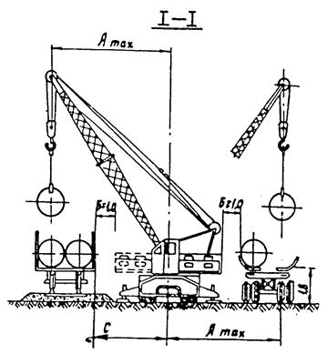

МИНИСТЕРСТВО
СТРОИТЕЛЬСТВА ПРЕДПРИЯТИЙ
НЕФТЯНОЙ И ГАЗОВОЙ ПРОМЫШЛЕННОСТИ
ВСЕСОЮЗНЫЙ
НАУЧНО-ИССЛЕДОВАТЕЛЬСКИИ ИНСТИТУТ
ПО СТРОИТЕЛЬСТВУ МАГИСТРАЛЬНЫХ ТРУБОПРОВОДОВ
СТРОИТЕЛЬСТВО МАГИСТРАЛЬНЫХ ТРУБОПРОВОДОВ
Технология и организация
BCH 004-88
Миннефтегазстрой
Москва 1989
РАЗРАБОТАНЫ И ВНЕСЕНЫ Всесоюзным научно-исследовательским институтом по строительству магистральных трубопроводов (ВНИИСТ) Миннефтегазстроя СССР:
д-р техн. наук Р.М. Шакиров; кандидаты техн. наук: В.С. Бортаковский, Е.А. Аникин, М.Ю. Митрохин, Е.Л. Семин, В.Ф. Николенко, инженеры И.В. Кондрашов, Н.Т. Виленская, А.Г. Ларионов.
ПОДГОТОВЛЕНЫ К УТВЕРЖДЕНИЮ Главным научно-техническим управлением Миннефтегазстроя;
канд. техн. наук В.А. Шукаев.
С введением в действие "Строительство магистральных трубопроводов. Технология и организация" ВСН 004-88/Миннефтегазстрой утрачивают силу:
"Инструкция по межобъектной этапной специализации работ при сооружении линейной части магистральных трубопроводов" ВСН 197-86/Миннефтегазстрой;
"Инструкция по организационно-технологической подготовке строительного производства при сооружении линейной части магистральных трубопроводов" ВСН 188-85/Миннефтегазстрой;
"Инструкция по производству работ при сооружении магистральных стальных трубопроводов. Земляные работы" ВСН 2-130-81/Миннефтегазстрой;
"Инструкция по рекультивации земель при строительстве трубопроводов" ВСН 179-85/Миннефтегазстрой;
"Инструкция по технологии и организации перевозки, погрузки, разгрузки и складирования труб больших диаметров при строительстве нефтегазопроводов" ВСН 2-135-81/Миннефтегазстрой;
"Инструкция по производству работ при сооружении магистральных стальных трубопроводов. Изоляционно-укладочные работы" ВСН 2-149-82/Миннефтегазстрой;
"Инструкция по технологии и организации строительства трубопроводов из труб с заводской изоляцией" ВСН 222-87/Миннефтегазстрой;
"Инструкция по автоматизированному оптимальному расчету проектов производства работ на строительстве линейной части магистральных трубопроводов" ВСН 187-85/Миннефтегазстрой;
"Положение о полевом городке (вахтовом поселке) организаций Министерства строительства предприятий нефтяной и газовой промышленности" РД 102-019-83.
СОГЛАСОВАНЫ: Госстрой СССР, Мингазпром, Миннефтепром, Госнадзор, ВНИИПКтехоргнефтегазстрой
|
Министерство строительства предприятий нефтяной и газовой промышленности |
Ведомственные строительные нормы |
ВСН 004-88 Миннефтегазстрой |
|
Строительство
магистральных трубопроводов. |
Взамен: ВСН 197-86 Миннефтнгазстрой ВСН 138-85 Миннефтегазстрой ВСН 2-130-81 Миннефтегазстрой ВСН 179-85 Миннефтегазстрой ВСН. 2-135-81 Миннефтегазстрой ВСН 2-149-82 Миннефтегазстрой ВСН 222-87 Миннефтегазстрой ВСН 187-85 Миннефтегазстрой РД 102-019-83 |
1.1. Настоящие Ведомственные строительные нормы (ВСН) распространяются на сооружение подземных магистральных стальных трубопроводов диаметром до 1420 мм (включительно) с избыточным давлением среды не выше 10 МПа.
1.2. Требования настоящего нормативного документа распространяются на производство, контроль и приемку работ подготовительного и основного (земляные, погрузочно-разгрузочные, транспортные, складские, изоляционно-укладочные работы) периодов строительства линейной части магистральных трубопроводов.
|
Внесены
отделом технологии и организации строительства магистральных трубопроводов |
Утверждены приказом Миннефтегазстроя |
Срок введения в действие |
1.3. Требования настоящего нормативного документа не распространяются на строительство магистральных трубопроводов на морских акваториях и в районах с сейсмичностью свыше 8 баллов для подземных и свыше 6 баллов для надземных трубопроводов. В этих случаях должны соблюдаться специальные требования к производству и приемке работ, регламентированные проектом.
1.4. При строительстве магистральных трубопроводов, кроме требований настоящего нормативного документа, должны соблюдаться требования глав СНиП по организации строительного производства, магистральным трубопроводам, технике безопасности в строительстве, геодезическим работам в строительстве, приемке в эксплуатацию законченных строительством объектов, земляным сооружениям, основаниям и фундаментам, стандартов, утвержденных в установленном порядке.
1.5. Ширина полосы отвода земель на время строительства магистральных трубопроводов определяется проектом в соответствии с "Нормами отвода земель для магистральных трубопроводов" и "Основами земельного законодательства Союза ССР и союзных республик" (справочное прил. 1).
1.6. К производству работ подготовительного и основного периодов строительства должны допускаться люди, прошедшие обучение, инструктаж и проверку знаний по технике безопасности.
1.7. При производстве строительно-монтажных работ должен осуществляться производителями работ строительных и специализированных организаций операционный контроль их качества (по всем технологическим процессам). Представители заказчика, а также представители органов государственного надзора производят выборочный контроль качества работ.
2.1. Организация строительства магистральных трубопроводов должна базироваться преимущественно на поточном методе выполнения работ. В отдельных случаях (строительство отводов, перемычек, лупингов и т.д.) допускается выполнение этапов строительства (или всего комплекса работ) специализированными по видам работ подразделениями.
2.2. При поточном строительстве основным технологическим строительным подразделением должен являться комплексный технологический поток, работающий на правах генподрядной строительной организации.
2.3. На правах субподряда совместно с комплексным технологическим потоком должны быть сформированы дорожный, транспортный и инженерно-технологический потоки, специализированные на выполнении отдельных законченных этапов строительства трубопроводов, а также другие специализированные строительные и обслуживающие подразделения.
2.4. Взаимоотношения этапно-специализированных подразделений должны осуществляться на основе внутреннего хозрасчета.
2.5. Допускается одновременное ведение строительных работ комплексным технологическим потоком на двух или более трубопроводных объектах в пределах отведенных ему участков (при работе в едином энергетическом коридоре).
3.1. В зависимости от организационной, технологической и экономической подготовки строительства трубопроводного объекта в подготовительном периоде следует выделять три этапа:
организационный;
мобилизационный,
подготовительно-технологический.
3.2. На организационном этапе должна быть рассмотрена и согласована проектно-сметная документация, необходимая для начала строительства данного трубопроводного объекта, проработаны вопросы комплектации и социального развития.
На мобилизационном этапе должны выполняться внетрассовые подготовительные работы.
На подготовительно-технологическом этапе следует выполнять вдольтрассовые подготовительные работы.
3.3. Мероприятия, выполняемые на организационном этапе до начала строительно-монтажных работ, должны подразделяться на:
мероприятия строительной организации;
мероприятия по подготовке строительства конкретного объекта.
3.4. Мероприятия строительной организации должны предусматривать развитие производственной базы, в том числе: комплектацию парка машин и механизмов, подготовку кадров, решение вопросов социального развития.
3.5. Организационный этап инженерной подготовки строительного производства трубопроводного объекта должен включать следующие мероприятия:
рассмотрение и приемку утвержденной в установленном порядке проектно-сметной документации;
заключение договоров подряда-субподряда на капитальное строительство;
открытие финансирования строительства;
приемку трассы трубопровода от заказчика в натуре и получение разрешения на строительство;
получение лесопорубочных билетов;
разработку проектов производства работ.
3.6. Основанием для строительства магистрального трубопровода должно служить наличие следующих документов:
утвержденного проекта (рабочего проекта) и сводного сметного расчета стоимости строительства или выписок из них, когда строительство осуществляется несколькими генподрядными организациями;
рабочих чертежей и утвержденных смет по рабочим чертежам (объектных и локальных);
разрешения соответствующих ведомств и эксплуатационных служб на право выполнения строительно-монтажных работ;
утвержденного проекта производства работ;
оформленного финансирования в учреждениях Промстройбанка СССР (Госбанка СССР);
оформленных договоров подряда-субподряда.
3.7. При рассмотрении проекта (рабочего проекта) генподрядчик и субподрядные организации должны проверить соответствие разделов проекта организации строительства требованиям СНиП 1.02.01-85, СНиП 3.01.01-85 "Организация строительного производства".
3.8. Оформление договоров подряда-субподряда должно осуществляться в соответствии с положениями правил о договорах подряда.
3.9. Материально-техническое снабжение строительства линейной части трубопровода должно осуществляться в соответствии с Постановлением СМ СССР от 28.09.70 г. № 810.
3.10. При сдаче трассы заказчик обязан создать геодезическую разбивочную основу для строительства и не менее чем за 10 дней до начала выполнения строительно-монтажных работ передать поэтапно подрядчику техническую документации на нее и закрепленные на полосе строительства пункты основы в соответствии со СНиП 3.01.03-84 "Геодезические работы в строительстве".
Одновременно с приемкой трассы трубопровода должна быть осуществлена приемка оси линии технологической связи.
3.11. При приемке трассы имеющиеся расхождения в проекте и в натуре должны быть оформлены актами и в месячный срок скорректированы в технической документации.
3.12. В процессе сдачи-приемки трассы генподрядчик должен принять от заказчика документы на отвод земельных участков на период строительства трубопровода, разработку карьеров, копии лесопорубочных билетов, рабочую документацию.
3.13. На мобилизационном этапе с учетом конкретных условий строительства должны выполняться следующие внетрассовые подготовительные работы:
сооружение временных на период строительства жилых городков и объектов культурно-бытового назначения, баз централизованного технического обслуживания машин, сетей электро-, водо- и теплоснабжения, канализации, радио- и телефонной связи и системы диспетчерской связи, подъездных дорог, сварочных и изоляционных баз, складов, вертолетных площадок и причалов;
приемка и складирование труб, материалов и оборудования;
открытие карьеров;
сварка труб в секции, изоляция в базовых условиях и изготовление криволинейных вставок.
3.14. Вопросы выбора и сооружения подъездных дорог, а также организация работы транспорта должны быть решены в проекте организации строительства при разработке транспортных схем.
3.15. Сварочные базы, как правило, должны располагаться при жилых городках. При сварочной базе размещают установку по холодному гнутью труб.
3.16. Изоляционные базы должны сооружаться при сварочных базах для изоляции стыков на трубных секциях.
3.17. Для хранения наиболее объемных строительных грузов труб трубных секций и железобетонных пригрузов должны устраиваться временные на период строительства склады, которые располагаются в пунктах разгрузки (прирельсовые), при сварочных базах (базовые), в различных точках трассы (трассовые склады). Количество различных видов складов должно быть обосновано транспортной схемой в составе проекта организации строительства.
3.18. Площадки для приема вертолетов должны устраиваться при жилых городках, сварочных базах, в местах сосредоточенных работ (переходы рек, узлы подключения КС и НС), вблизи трассы согласно проекту организации строительства.
3.19. На мобилизационном этапе должен быть создан запас труб не менее 50 - 80 % всего запланированного количества, а в районах со сложными природно-климатическими условиями - 100 %.
3.20. Генеральный проектировщик должен обеспечить генподрядчика проектно-сметной документацией на "Временные здания и сооружения", куда входят полевые жилгородки, базы сварки, изоляции, технического обслуживания, а также их инженерное обеспечение. Он же осуществляет вместе с заказчиком отвод территорий под их размещение в соответствии с прил. 2 СНиП 3.01.01-85 "Организация строительного производства".
3.21. Для доставки материалов на объекты должна быть использована преимущественно существующая дорожная сеть, а в необходимых случаях (если нет дорог) построены временные подъездные дороги.
Существующие дороги (если это необходимо) следует отремонтировать и в дальнейшем поддерживать в рабочем состоянии.
3.22. В зимний период для подъезда к строительным площадкам должны быть оборудованы зимние и ледовые дороги, ледовые переправы в соответствии с проектом.
3.23. Проектная организация должна обеспечить генподрядчика документацией на дороги сезонного действия с указанием объемов работ, используемых конструкций и правил их эксплуатации.
3.24. Для приемки грузов водным путем должны быть оборудованы временные причалы.
Выбор конструкции причала обусловлен проектом.
3.25. Взлетно-посадочные площадки для вертолетов, обусловленные проектом, должны сооружаться в соответствии с требованиями СНиП по строительству аэродромов.
3.26. Для обеспечения строительных объектов привозным гравийно-песчаным материалом проектом должны быть предусмотрены карьеры.
Начинать разработку карьера можно только после того, как он принят специальной комиссией. К акту приемки должны быть приложены;
пояснительная записка;
план карьера с указанием расположения скважин и шурфов;
геологические разрезы.
К разработке карьера следует приступать последовательно, по следующей схеме:
вынос в натуру контура площади проектируемого карьера, а также контуров вспомогательных сооружений;
устройство подъездных дорог к карьеру и другим, производственным и бытовым сооружениям, предусмотренным проектом.
3.27. На подготовительно-технологическом этапе должны выполняться первоочередные и совмещенные вдольтрассовые работы:
восстановление закрепления оси трассы и пикетажа, детальная разбивка горизонтальных и вертикальных кривых, разметка строительной полосы, выноска пикетов за ее пределы;
расчистка строительной полосы от леса и кустарника, корчевка пней;
снятие и складирование в специально отведенных местах плодородного слоя почвы;
планировка строительной полосы, уборка валунов, нависших камней, устройство полок на косогорах;
осушение строительной полосы, ее промораживание и защита от промерзания в зависимости от условий строительства;
строительство вдольтрассовых временных дорог и монтажных проездов;
сварка труб в секции на полевой трубосварочной базе;
изготовление гнутых отводов (кривых);
поддержание дорог в работоспособном состоянии;
изоляция (или футеровка при необходимости) секций труб в базовых условиях на трассе;
вывозка на трассу трубных секций, кривых, балластных грузов;
устройство защитных ограждений, обеспечивающих безопасность производства работ.
3.28. Генподрядчик принимает в соответствии с требованиями СНиП 3.01.03-84 "Геодезические работы в строительстве" созданную заказчиком геодезическую разбивочную основу и техническою документацию на нее.
3.29. Закрепление трассы должно быть выполнено силами и средствами генподрядной организации в соответствии со СНиП по геодезическим работам и по правилам производства работ.
3.30. После планировки рельефа трассы, срезки грунта или устройства полок в горной местности знаки разбивки оси трассы также должны быть закреплены.
3.31. Вид и конструкция осушительных сооружений, зависящие от конкретных гидрогеологических условий участка, должны быть указаны в проекте и согласованы с землепользователями.
Осушение на трасте должно сводиться к следующим мероприятиям:
устройству боковых, отводных, нагорных и дренажных канав;
строительству водопропускных и водоотводных сооружений, которые служат для отвода поверхностных вод и понижения уровня грунтовых вод;
строительству подземного дренажного трубопровода;
устройству вертикальных иглофильтров на небольших участках (переходы через дороги).
На участках с плывунными грунтами через каждые 50 - 60 м по створу будущей траншеи должны устраиваться водопонизительные колодцы глубиной по 3,5 - 4 м для откачки из них воды насосами.
3.32. Перед началом работ по планировке строительной полосы необходимо расчистить ее от валунов и камней.
Планировку трассы в условиях барханных и грядоячеистых песков следует осуществлять путей срезки барханов и отсыпки грунтов в межбарханные впадины за пределами строительной полосы.
Планировочные работы на участках трассы, которые проходят через местность с подвижными песками, следует выполнять непосредственно перед началом строительно-монтажных работ.
На заболоченных участках трассы в зоне проезда и работы машин и на полосе устройства основания под трубопровод при наземной прокладке планировку следует выполнять в основном путем засыпки неровностей привозным грунтом, не допуская срезки и нарушения верхнего торфяного покрова болота.
3.33. Расчистка трассы от леса и кустарника должна быть выполнена в границах строительной полосы и других местах, установленных проектом. К расчистке леса приступают после получения специального разрешения - лесорубочного билета (ордера).
3.34. Перед началом строительных работ в горных районах необходимо удалить навесные камни и скалы, провести защитные противообвальные и противооползневые мероприятия, срезать крутые склоны, установить средства якорения механизмов.
3.35. На участках со слабым и просадочным естественным основанием необходимо предусматривать противодеформационные мероприятия с учетом местных мерзлотно-грунтовых, гидрогеологических, геоморфологических и других природных условий, в том числе: устройство основания из дренирующих грунтов, рациональное размещение водопропускных сооружений и устройств; устройство берм на подтопляемых участках и др.
При наличии в полосе отвода кустарника и неделовой древесины последние следует использовать в основании дорог.
3.36. Защитные ограждения должны возводиться на рабочих площадках согласно проекту.
3.37. Приемку законченных инженерно-подготовительных работ следует выполнять к моменту начала последующих видов работ. На все отклонения от проектных решений должны быть составлены акты.
3.38. Все подготовительные работы при сооружении линейной части магистральных трубопроводов, их организация, а также величины охранных зон должны соответствовать требованиям "Правил охраны магистральных трубопроводов", утвержденных Постановлением СМ СССР от 12.04.79 г. № 341, а также "Инструкции по производству строительных работ в охранных зонах магистральных трубопроводов" ВСН 51-1-80/Мингазпром.
Земляные работы
4.1. Способы производства земляных работ на строительстве магистральных трубопроводов определяются проектом и регламентируются требованиями СНиП по земляным сооружениям, основаниям и фундаментам, а также настоящим разделом ВСН.
4.2. Земляные работы должны производиться с обеспечением требований качества и с обязательным пооперационным контролем всех технологических процессов.
4.3. Параметры земляных сооружений (ширина траншеи или насыпи, глубина выемки, высота насыпи, крутизна откосов) определятся проектом (рабочими чертежами) в соответствии с требованиями СНиП по проектированию.
4.4. К началу работ по рытью траншеи должны быть получены:
письменное разрешение на право производства земляных работ в зоне расположения подземных коммуникаций, выданное организацией, ответственной за эксплуатацию этих коммуникаций;
проект производства земляных работ;
наряд-задание экипажу экскаватора (если работы выполняются совместно с бульдозерами и рыхлителями, то и машинистам этих машин) на производство работ.
4.5. Перед разработкой траншей следует воспроизвести разбивку ее оси.
4.6. Основание траншеи должно быть выровнено в соответствии с проектом.
4.7. Разработка траншеи должна производиться одноковшовым экскаватором:
на участках с выраженной холмистой местностью (или сильнопересеченной), прерывающейся различными (в том числе водными) преградами;
на участках кривых вставок трубопровода;
при работе в мягких грунтах с включением валунов;
на участках повышенной влажности;
в обводненных грунтах (на рисовых полях и орошаемых землях);
в местах, где невозможно или нецелесообразно использовать роторный экскаватор;
на участках, определенных проектом.
4.8. На участках со спокойным рельефом местности, на отлогих возвышенностях, на мягких подножьях и на мягких затяжных склонах гор работы могут производиться роторным траншейным экскаватором.
Для разработки широких траншей с откосами (в сильно обводненных, сыпучих, неустойчивых грунтах) должны применяться одноковшовые экскаваторы, оборудованные драглайном.
4.9. Траншеи с вертикальными стенками без крепления должны разрабатываться в грунтах естественной влажности с нарушенной структурой при отсутствии грунтовых вод на следующую глубину, м:
в насыпных песчаных и гравелистых грунтах - не более 1;
в супесях - не более 1,25;
в суглинках и глинах - не более 1,5;
Для рытья траншей большей глубины необходимо устраивать откосы различного заложения в зависимости от состава грунта и его влажности в соответствии с требованиями СНиП по магистральным трубопроводам.
В глинистых грунтах, переувлажненных дождевыми, снеговыми (талыми) и другими водами, крутизна откосов котлованов и траншей долина быть уменьшена до величины угла естественного откоса. Это уменьшение производитель работ обязан оформить актом. При разработке лёссовидных и насыпных грунтов должно предусматриваться крепление стенок.
При образовании трещин у бровки траншеи работы должны быть прекращены. На участках, где производятся неотложные работы, допускается делать местное уменьшение крутизны откосов.
4.10. Параметры траншеи в местах переходов через препятствия и подземные коммуникации, а также котлованов под технологические узлы определяются проектом.
4.11. При обнаружении подземных коммуникаций, не значащихся в проектной документации, земляные работы должны быть прекращены, а их дальнейшее продолжение согласовано представителем заказчика с эксплуатирующей организацией с привлечением проектных институтов.
4.12. Грунт, вынутый из траншеи, следует укладывать в отвал с одной (левой по направлению работ) стороны траншеи на расстоянии не ближе 0,5 м от края, оставляя другу» сторону свободной для передвижения транспорта и производства прочих работ.
4.13. Для обеспечения устойчивости стенок траншеи при ведении работ в малоустойчивых грунтах роторными экскаваторами последние должны быть оборудованы специальными откосниками.
4.14. Глубокие траншеи (глубина которых превышает максимальную глубину копания экскаватора данной марки) должны разрабатываться экскаваторами в комплексе с бульдозерами.
4.15. При проведении земляных работ в скальных грунтах на равнинной местности вскрышной слой грунта (при мощности его менее проектной глубины разрабатываемой траншеи) должен сниматься бульдозерами на всю глубину до обнажения скального грунта.
На участках с толщиной мягкого грунтового слоя 10-15 см и менее его можно не удалять.
При шарошечном бурении зарядных шпуров и скважин снимать мягкий грунт следует только с целью его сохранения или использования для устройства постели или присыпки трубопровода.
4.16. Снятый грунт следует укладывать на берме траншеи. Отвал разрыхленного скального грунта должен располагаться за отвалом грунта вскрыши.
4.17. Рыхление скальных и мерзлых грунтов должно производиться преимущественно способами короткозамедленного взрывания, при котором зарядные скважины (шпуры) следует располагать по квадратной сетке.
В исключительных случаях применения мгновенного способа взрывания скважины (шпуры) следует располагать в шахматном порядке.
4.18. Взрывные работы должны проводиться таким образом, чтобы скальная порода была разрыхлена до проектных отметок траншеи.
В равной мере это относится и к устройству полок взрывным способом.
При рыхлении грунта взрывным методом куски разрыхленного грунта не должны превышать 2/3 размера ковша экскаватора, предназначенного для его разработки. Куски больших размеров разрушают накладными зарядами.
4.19. Для предохранения изоляционного покрытия от повреждения при укладке трубопровода и его последующей засыпке должны быть выполнены специальные мероприятия, обусловленные проектом.
4.20. При прохождении трассы трубопровода в горной местности по крутым продольным уклонам должна производиться их планировка путем срезки грунта и уменьшения угла подъема. Эти работы выполняются по всей ширине полосы отвода бульдозерами, которые, срезая грунт, передвигаются сверху вниз и сталкивают его к подножию склона вне пределов строительной полосы. Траншея должна быть выкопана не в насыпном грунте, а в материковом. Устройство насыпи возможно только в зоне прохода транспортных машин.
4.21. При прохождении трассы по склону с поперечной крутизной более 8° должна устраиваться полка (рис. 1).
4.22. Для устойчивости полки ее отрывают с уклоном в 3 - 4 % в сторону косогора.
4.23. На участках с поперечным уклоном до 15° разработку выемок под полки в нескальных и разрыхленных скальных грунтах следует производить поперечными проходами бульдозеров перпендикулярно к оси трассы (рис. 2). Доработка полки и ее планировка производятся продольными проходами бульдозера с послойной разработкой грунта и перемещением его в полунасыпи.
Разработка грунта при устройстве полок на участках с поперечным уклоном до 15° может выполняться также продольными проходами бульдозера по схеме, приведенной на рис. 3. Бульдозер вначале производит срезку и разработку грунта у линии перехода полувыемки в полунасыпь. После срезки грунта в призме I и перемещения его в насыпную часть полки разрабатывается грунт в призме II, а затем в призмах III и IV-до полной разработки профиля полувыемки.
Рис. 1. Схема поперечного разреза полки:
1 - полувыемка; 2 - уступы для устойчивости полунасыпи; 3 - полунасыпь;
4 - нагорная водоотводная канава; 5 - траншея для трубопровода
Рис. 2. Схема разработки полок на склонах поперечными проходами бульдозера.
Рис. 3. Схема разработки полок на склонах продольными проходами бульдозера:
I, II, III, IV - призмы разработанного грунта.
При больших объемах земляных работ допускается использовать два бульдозера, разрабатывающие полки с двух сторон продольными проходами навстречу друг другу.
4.24. На участках с поперечным уклоном более 15° для разработки разрыхленного или нескального грунта при устройстве полок следует применять одноковшовые экскаваторы, оборудованные прямой лопатой. Экскаватор разрабатывает грунт в пределах полувыемки и отсыпает его в насыпную часть полки (рис. 4). В процессе первоначальной разработки полки его необходимо якорить бульдозером или трактором. Окончательная доработка и планировка полки производится бульдозером.
Рис. 4. Схема разработки полок экскаватором
4.25. При устройстве полок и рытье траншей в горной местности рыхление неразборной скалы возможно осуществлять тракторными рыхлителями или буровзрывным способом.
4.26. Способы бурения шпуров и скважин, а также методы заряжения и взрывания зарядов при устройстве полок в горных районах и траншей на полках аналогичны способам, применяемым при разработке траншей в скальных грунтах на равнинной местности.
4.27. Земляные работы по разработке траншей на полках должны вестись с опережением вывозки труб на трассу.
Траншеи на полках в мягких грунтах и сильно выветривающихся скальных породах должны разрабатываться одноковшовыми и роторными экскаваторами без рыхления.
Hа участках с плотными скальными грунтами перед разработкой траншеи грунт рыхлят взрывным способом.
Землеройные машины при разработке траншей должны перемещаться по тщательно спланированной полке; при этом одноковшовые экскаваторы, оборудованные обратной лопатой, могут перемещаться так же, как и при сооружении траншей в скальных грунтах на равнинной местности, по настилу из металлических или деревянных щитов.
4.28. Отвал грунта из траншеи должен размещаться у бровки откоса полувыемками, с правой стороны полки по ходу разработки траншеи. Если отвал грунта располагается в зоне проезда, то грунт планируют по полке и утрамбовывают бульдозерами.
4.29. Разработку траншей на участках трассы с продольными уклонами до 15°, если нет поперечных косогоров, следует выполнять одноковшовым экскаватором без специальных предварительных мероприятий. При работе на продольных уклонах от 15 до 36° должна быть осуществлена, предварительная анкеровка экскаватора. Число анкеров и метод их закрепления следует определять расчетом в соответствии с проектом производства работ.
4.30. На продольных уклонах до 22° разработка грунта одноковшовым экскаватором допускается в направлении как снизу вверх, так и сверху вниз по склону.
На участках с уклоном более 22° допускается вести работы при прямой лопате только в направлении сверху вниз по склону ковшом вперед по ходу работ, а при обратной лопате - только сверху вниз по склону ковшом назад по ходу работ.
Разработку траншей на продольных уклонах до 36° в грунтах, не требующих рыхления, следует производить одноковшовыми или роторными экскаваторами; в предварительно разрыхленных грунтах - одноковшовыми экскаваторами.
Работа роторных экскаваторов разрешается на продольных уклонах до 36° при движении их сверху вниз. При уклонах от 36 до 45° применяется анкеровка экскаваторов.
Работа одноковшовых экскаваторов при продольном уклоне свыше 22° и роторных экскаваторов при уклоне свыше 45° должна выполняться специальными приемами согласно проекту производства работ.
Работа бульдозера разрешается на продольных уклонах до 36°.
4.31. Засыпка трубопровода скальным грунтом в случае, если грунт распланирован по полке, должна производиться бульдозером или роторным траншеезасыпателем, оставшийся грунт разравнивается по полосе строительства.
В том случае, если грунт находится у бровки со стороны откоса полувыемки, то допускается использование одноковшового экскаватора.
4.32. Засыпка трубопровода на продольных склонах должна производиться бульдозером, который перемещается вдоль или под углом к траншее, а также может осуществляться сверху вниз по склону траншеезасыпателем с обязательным его якорением на уклонах свыше 15°.
4.33. Для предотвращения смывания грунта при засыпке трубопровода на крутых продольных склонах (свыше 15°) должны устраиваться перемычки.
4.3. Перед началом земляных работ в зимнее время должен быть удален снег с полосы будущей траншеи.
4.35. Во избежание заноса траншей снегом и смерзания отвала грунта при работе зимой темп разработки траншеи должен соответствовать темпу изоляционно-укладочных работ. Технологический разрыв между землеройной и изоляционно-укладочной колоннами должен быть не более двухсуточной производительности землеройной колонны.
Рис. 5. Схема разработки траншеи в мерзлом грунте с предварительным рыхлением их буровзрывным способом:
а - снятие снежного покрова; б - рыхление грунта буровзрывным способом;
в - планировка разрыхлённого грунта; г - разработка траншеи
4.36. При глубине промерзания грунта до 0,4 м разработка траншеи должна производиться роторным или одноковшовым экскаватором, оборудованным ковшом-обратная лопата с емкостью 0,65 - 1,5 м3.
При глубине промерзания грунта более 0,4 м перед разработкой его одноковшовым экскаватором грунт необходимо рыхлить механическим или буровзрывным способом.
Роторными экскаваторами допускается разрабатывать траншею в грунтах с большей глубиной промерзания (справочное прил. 2).
4.37. Рыхление мерзлых грунтов буровзрывным способом при разработке траншей должно осуществляться методом технологических захваток (рис. 5).
Захватки должны устанавливаться с таким расчетом, чтобы весь взорванный грунт был разработан в течение одной смены. Расстояние между захватками должно обеспечивать безопасное ведение работ на каждой из них.
Бурение шпуров осуществляется шнековыми мотобурами, перфораторами и самоходными буровыми машинами,
4.38. При разработке мерзлого грунта с использованием тракторных рыхлителей мощностью 250 - 500 л.с. работы по разработке траншеи должны осуществляться по следующим схемам:
Схема 1. При глубине промерзания грунта до 0,8 м стоечным рыхлителем грунт разрыхляется на всю глубину промерзания, а затем разрабатывается одноковшовым экскаватором.
Выемку разрыхленного грунта необходимо осуществлять сразу после рыхления (рис. 6).
Схема 2. При глубине промерзания грунта до 1 м работы необходимо вести в следующей последовательности:
рыхление грунта стоечным рыхлителем за несколько проходов, затем выбор разрыхленного грунта бульдозером вдоль траншеи;
оставшийся грунт с глубиной промерзания менее 0,4 м должен разрабатываться одноковшовым экскаватором.
Схема 3. При глубине промерзания грунта до 1,5 м работы допускается проводить аналогично предыдущей схеме.
Рыхление грунта должно осуществляться стоечным рыхлителем, оснащенным одним или несколькими зубьями.
Рис. 6. Схема разработки траншеи в мерзлом грунте с предварительным рыхлением его механическим рыхлителем:
а - снятие снежного покрова; б -
рыхление грунта механическим рыхлителем;
в - планировка разрыхленного грунта; г - разработка траншеи экскаватором
4.39. Разработку траншей в грунтах с глубиной промерзания более 1 м допускается проводить проходом двух или трех роторных экскаваторов.
4.40. При засыпке трубопровода в зимнее время мерзлым грунтом поверх него должен устраиваться валик грунта с учетом последующей осадки его при оттаивании.
4.41. Земляные работы в условиях болот и заболоченной местности должны выполняться по следующим схемам:
Схема 1. При глубине торфяного слоя до 1 м с подстилающим основанием, имеющим высокую несущую способность, разработка траншеи осуществляется с предварительным удалением торфа бульдозером или экскаватором. Глубина траншеи на 0,15 - 0,2 м ниже проектной отметки. При использовании экскаватора для выторфовывания протяженность создаваемого фронта работ должна быть 40 - 50 м.
Схема 2. При глубине торфяного слоя более 1 м с подстилающим основанием, имеющим низкую несущую способность, разработка траншей должна осуществляться с применением специальной техники, щитов или сланей.
При отсутствии специальной техники разработка траншеи может осуществляться одноковшовым экскаватором, находящимся на сланях или корытообразной пене.
4.42. На болотистых участках небольшой протяженности (до 500 м) со слабой несущей способностью разработку траншей допускается выполнять с помощью канатно-скреперных установок.
4.43. Болота большой протяженности с низкой несущей способностью торфяного покрова следует проходить зимой, а заболоченные участки - также и летом.
4.44. На участках с глубоким промерзанием торфа работы должны выполняться комбинированным способом: разрыхление мерзлого слоя буровзрывным методом и разработку грунта до проектной отметки одноковшовым экскаватором.
4.45. На болотах I и II типов засыпка траншей должна выполняться либо бульдозерами на болотном ходу, либо экскаваторам - драглайном на уширенном или обычном ходу, перемещающимся по сланям на отвалах грунта.
4.46. Траншеи в песчаных грунтах должны разрабатываться бульдозерами, скреперами, одноковшовыми и роторными экскаваторами.
Неглубокие траншей (до 1,2 м - в сыпучих грунтах и до 1,5 м - во влажных) допускается разрабатывать бульдозерами продольно-поперечным способом.
При устройстве глубоких траншей в сыпучих песках должны применяться комбинированный способ разработки грунта. Верхний слой грунта (глубиной до 1,0 м) разрабатывается бульдозерами, а остальная часть до проектной отметки - одноковшовыми экскаваторами.
Разработку траншей в плотных закрепленных растительностью и влажных песчаных грунтах следует производить роторными экскаваторами, снабженными откосообразователями, формирующими стенки с откосами от дна траншеи.
В местах кривых вставок трубопровода при работе в закрепленных несыпучих песчаных грунтах траншеи должны разрабатываться одноковшовыми экскаваторами, оборудованными ковшом - обратная лопата.
4.47. Трубопровод должен засыпаться непосредственно вслед за изоляционно-укладочными работами не позже трех суток после его укладки. Засыпка уложенного трубопровода грунтом из разровненного отвала производится поперечными проходами бульдозера.
Засыпку траншеи при значительной высоте отвала следует выполнять проходами бульдозера, направленными под углом к отвалу, с окончательной засыпкой и зачисткой прямыми поперечными проходами.
4.48. После окончания земляных работ прилегающая полоса в зоне подвижных песков должна быть закреплена в соответствии с проектом.
4.49. Параметры траншеи при сооружении трубопровода, балластируемого утяжеляющими армобетонными грузами, или бетонированного трубопровода определяются проектом в соответствии с требованиями СНиП по проектированию. Методы производства земляных работ аналогичны методам производства земляных работ на болотах.
4.50. Сроки проведения земляных работ по строительству трубопровода на плодородных землях должны быть определены проектным институтом на стадии согласования отвода земель с землепользователями.
4.51. Через оросительные каналы и осушительные коллекторы должны быть оборудованы переезды с водопропусками в соответствии с проектом и согласованы с их владельцами. После окончания работ переезды следует разобрать, а грунт переместить обратно в резерв.
4.52. Засыпку трубопровода в любых грунтах после получения письменного разрешения заказчика следует выполнять бульдозерами прямолинейными, косопоперечными параллельными, косоперекрестными или комбинированными проходами. В стесненных условиях строительной полосы, а также в местах с уменьшенной полосой отвода работы должны выполняться косопоперечными параллельными или косоперекрестными проходами бульдозером или роторным траншеезасыпателем (рис. 7).
Рис. 7. Схемы производства работ по засыпке уложенного трубопровода бульдозером:
а - прямолинейными проходами; б
- косопоперечными параллельными проходами;
в - косоперекрестными проходами; г - комбинированным способом.
4.53. При наличии горизонтальных кривых на трубопроводе вначале должен засыпаться криволинейный участок, а затем остальная часть. Засыпка криволинейного участка начинается с его середины движением поочередно к его концам.
4.54. На участках местности с вертикальными кривыми трубопровода (в оврагах, балках, на холмах и т.п.) засыпку следует производить сверху вниз.
4.55. После засыпки на нерекультивируемых землях над трубопроводом устраивают валик грунта в виде правильной призмы в соответствии со СНиП по магистральным трубопроводам.
На рекультивируемых землях в теплое время года после засыпки трубопровода минеральным грунтом производят его уплотнение пневмокатками или гусеничными тракторами. Уплотнение минерального грунта должно выполняться до заполнения трубопровода транспортируемым продуктом.
4.56. Предоставляемые во временное пользование земельные участки после окончания строительства трубопровода должны быть восстановлены в соответствии с проектом.
4.57. Полоса отвода земель на лесных участках по окончании строительства должна быть очищена от пней, других древесных остатков и спланирована.
4.58. Рекультивация строительной полосы после засыпки магистральных трубопроводов должна осуществляться в процессе строительства трубопроводов в сроки, устанавливаемые органами, предоставляющими земельные участки в пользование в соответствии с проектами.
4.59. В проекте рекультивации земель в соответствии с условиями предоставления земельных участков в пользование и с учетом местных природно-климатических особенностей должны быть определены:
площади по трассе трубопровода, на которых необходимо проведение технической и биологической рекультивации;
объем снимаемого плодородного слоя почвы;
место расположения отвала для временного хранения снятого плодородного слоя почвы;
допустимое превышение нанесенного плодородного слоя почвы над уровнем ненарушенных земель;
объем и способы погрузки и вывозки лишнего минерального грунта после засыпки трубопровода;
стоимость работ по технической и биологической рекультивации.
4.60. Возвращение плодородного слоя почвы следует выполнять бульдозерами, перемещающими его из отвала хранения, распределяющими и выполняющими окончательную планировку продольными проходами.
4.61. Снятие плодородного слоя почвы должно выполняться роторным экскаватором. Допускается выполнять операции по снятию плодородного слоя почвы в не мерзлом состоянии продольными проходами бульдозеров на ширину ножей, но не менее 3,5 м для трубопроводов диаметром до 820 мм и с последующим расширением этой полосы до 8 м для трубопроводов диаметром 1020 - 1420 мм.
4.62. Плодородный слой почвы мощностью менее 20 см в не мерзлом состоянии должен сниматься продольными проходами бульдозеров. При этом ширину полосы рекультивации следует принимать на 1 м больше, чем при использовании роторного экскаватора. Для снятия плодородного слоя почвы в мерзлом состоянии следует использовать роторные экскаваторы.
4.63. На участках, где ширина верха траншей, выемок и насыпей превышает 3,5 м (углы поворота; подходы к переходам; крановые узлы; участки со скальными и мерзлыми грунтами, требующими предварительного разрыхления механическими рыхлителями или взрывом; и т.д.) плодородный слой почвы должен быть снят со всей подлежащей разработке площади до начала земляных работ (срезка, планировка, рытье широких траншеи, котлованов, отсыпка насыпей и т.п.).
4.64. Плодородный слой почвы должен быть снят и перемещен в отвал хранения на одну или обе стороны зоны земляных работ на расстояние, обеспечивающее размещение и возвращение минерального грунта на нарушаемую площадь, не допуская при этом перемешивания его с плодородным слоем почвы.
4.65. После перемещения плодородного слоя почвы в случае образования выемок и насыпей их откосы должны быть укреплены в соответствии с проектом.
4.66. На участках с низкой несущей способностью грунтов следует снимать плодородный слой почвы с полосы шириной не менее 3,5 м одноковшовыми экскаваторами с укладкой его в отвал на полосу монтажных работ и разравниванием.
4.67. В случае необходимости прокладки для осушения участка трассы дренажных канав или колодцев водосборников плодородный слой почвы и минеральный грунт следует последовательно укладывать по разные их стороны, а возвращать минеральный грунт и плодородный слой почвы в обратной последовательности.
4.68. После завершения работ, включая и благоустройство территории на всей строительной площадке, излишний плодородный слой почвы следует использовать для улучшения малопродуктивных угодий. Порядок использования плодородного слоя почвы для этой цели должен предусматриваться проектом.
4.69. При сооружении подъездных дорог плодородный слой почвы должен быть снят со всей полосы строительства роторными экскаваторами при необходимости с перемещением его в отвалы временного хранения бульдозерами или автотранспортом.
4.70. После завершения работ в карьере в зависимости от рельефа местности необходимо предусматривать планировку выработки с последующим возвращением плодородного слоя почвы на всю ее поверхность, либо заполнение выработки минеральным грунтом, вытесняемым сооружаемым трубопроводом, с последующей его планировкой и возвращением на него плодородного слоя почвы, или планировать откосы выработки до уклонов, обеспечивающих их устойчивость. Впоследствии покрывают откосы плодородным слоем почвы и засевают многолетними травами. Рекультивация отработанных карьеров должна предусматриваться проектом.
4.71. Работы по снятию плодородного слоя почвы должны выполняться как в холодное, так и в теплое время года, а работы по его возвращению только в теплое (безморозное) время года.
Погрузка, разгрузка, складирование и перевозка труб большого диаметра
4.72. При выборе способов проведения погрузочно-разгрузочных и транспортных работ в различных дорожно-климатических условиях следует учитывать:
технологическую схему транспортировки труб и секций;
необходимость обеспечения сохранности труб, в том числе антикоррозионного покрытия труб, в процессе их перевозки и проведения погрузочно-разгрузочных операций;
обеспечение безопасности работ при перевозке, погрузке, выгрузке и складировании труб и трубных секций;
необходимость обеспечения правильной загрузки транспортных средств и надежной увязки перевозимых труб;
обеспечение вписываемости транспортных средств в закругления дорог, в вертикальный профиль пути и разъезда со встречным транспортом;
тяговые возможности транспортных средств;
технико-экономические показатели транспортных средств.
4.73. При выполнении транспортных и погрузочно-разгрузочных работ следует соблюдать особые требования:
"Правил техники безопасности для предприятий автомобильного транспорта", утвержденных ЦК профсоюза рабочих автомобильного транспорта и шоссейных дорог;
"Правил дорожного движения", утвержденных МВД СССР;
"Инструкции по перевозке крупногабаритных и тяжеловесных грузов автомобильным транспортом", утвержденной МВД СССР;
"Правил технической эксплуатации железных дорог", утвержденных Министерством путей сообщения,
"Правил плавания по внутренним судоходным путям", утвержденных Министерством речного флота РСФСР,
"Правил техники безопасности при строительстве магистральных трубопроводов", утвержденных Миннефтегазстроем.
4.74. В составе транспортной схемы в общем случае должны предусматриваться следующие транспортные и погрузочно-разгрузочные операции:
погрузка труб на заводе-изготовителе и перевозка железнодорожным транспортом;
выгрузка и временное складирование труб на прирельсовом складе и в портах;
погрузка на автомобильный и другой вид транспорта;
перевозка труб на базисный или притрассовый склад;
погрузка и транспортировка трубных секций на трассу строительства трубопровода;
выгрузка и раскладка труб по трассе.
4.75. Доставка труб должна осуществляться железнодорожным, автомобильным, гусеничным, водным или воздушным транспортом.
Требования к перевозке труб железнодорожным транспортом приведены в справочном прил. 3, а водным транспортом - в справочном прил. 4.
Основные технические данные по используемым в отрасли видам транспорта и грузоподъемным средствам приведены в справочном прил. 5.
4.76. Выгрузку труб из железнодорожных полувагонов следует осуществлять по двум схемам: полувагон - склад - трубовоз или полувагон - трубовоз.
4.77. Выгрузка труб из полувагонов и погрузка их на транспортные средства должны производиться в следующей последовательности:
полувагоны с трубами подают на место разгрузки;
кран на прирельсовой разгрузочной площадке устанавливают в рабочее положение;
снимают скрутки, крепящие трубы в полувагоне;
крюк со стропом или несколькими стропами подают на середину полувагона;
трубу стропуют, поднимают, перемещают и грузят на трубовоз;
так же выгружают вторую трубу;
уложенные на трубовозе трубы закрепляют.
Основные типоразмеры и количество поставляемых в полувагонах труб приведены в справочном прил. 6.
4.78. При выгрузке труб из полувагонов кран должен устанавливаться между разгружаемым полувагоном и транспортным средством согласно схеме (рис. 8). Просвет Б между хвостовой частью платформы крана и наружным бортом полувагона должен составлять не менее 1 м. Допустимое расстояние С между продольной осью крана и боковой стенкой полувагона равно:
С=Аmax-Г+0,5D, (I)
где Г - ширина полувагона;
D - диаметр перевозимых труб.
Значения Amax и C для разных кранов приведены в табл. 1.

Рис. 8. Схема выгрузки труб из полувагонов с погрузкой их на транспортные средства
|
Марка крана |
Радиус, описываемый хвостовой частью, м |
Диаметр труб и толщина стенки, мм |
|||||
|
1420´18,7 |
1420´15,8 |
1220´15,2 |
1220´12,5 |
1020´14,0 |
1020´11,0 |
||
|
Масса трубы, т |
|||||||
|
8,49 |
7,26 |
5,42 |
4,46 |
4,17 |
3,28 |
||
|
КС-3562А (К-1015) |
2,4 |
- |
5,5 |
5,5 2,9 |
5,8 3,2 |
6,1 3,4 |
7,0 4,3 |
|
КС-3561 (К-1014) |
2,9 |
- |
- |
5,5 2,9 |
5,9 3,2 |
6,1 3,4 |
7,0 4,3 |
|
КС-4561 (К-162) |
2,9 |
5,5 3,0 |
6,2 3,7 |
7,5 4,9 |
8,3 5,7 |
- |
- |
|
КС-43б1 (К-161) |
3,0 |
5,8 3,3 |
6,4 3,9 |
8,0 5,4 |
8,8 6,2 |
- |
- |
|
КС-5365 |
3,6 |
8,5 5,0 |
9,5 7,0 |
- |
- |
- |
- |
|
АК-40Т-60 ("Либхер") |
3,1 |
7,2 4,7 |
7,8 5,3 |
- |
- |
- |
- |
|
F-450А ("Фиорентини") |
2,7 |
6,0 3,5 |
7,1 4,6 |
8,8 6,2 |
10,0 7,4 |
- |
- |
|
F-790А |
3,5 |
9,0 |
10,0 |
- |
- |
- |
- |
Примечание. В числителе - Amax, м; в знаменателе - С, м.
4.79. При разгрузке труб с заводским изоляционным покрытием особое внимание следует уделять сохранности изоляционного покрытия. Не допускается использование канатов, цепей и других грузозахватных устройств, вызывающих повреждения изоляции трубы. Все грузоподъемные средства (их рабочие органы) должны быть оборудованы защитными устройствами.
4.80. Полувагоны подаются под разгрузку рельсовым транспортом. Запрещается применять для перемещения вагонов тракторы, автомобили, трубоукладчики или другие машины нерельсового транспорта.
4.81. При разгрузке труб кранами и погрузке на транспортные средства, а также при складировании труб на прирельсовых и притрассовых складах с помощью трубоукладчиков должны использоваться торцевые захваты, состоящие из 2 и более канатов с крюками на концах и траверсы. Для исключения повреждений концов труб крики должны быть снабжены губками из мягкого материала.
4.82. Для выполнения подъемно-транспортных операций и перемещения на короткие расстояния секций труб с наружной изоляцией должны применяться мягкие полотенца с трубоукладчиком.
4.85. Для выполнения подъемно-транспортных операций с трубами без изоляции на трубосварочной базе и в трассовых условиях должны применяться трубоукладчики, оснащенные кольцевыми стропами, надеваемыми на трубы удавкой.
4.84. Для автоматической строповки и расстроповки труб и секций труб при их подъеме и перемещении трубоукладчиком следует применять клещевые захваты.
4.85. При выполнении подъемно-транспортных работ на складах, а также при погрузочно-разгрузочных работах допускается использование автоматических захватов.
4.86. Склады для хранения труб должны предусматриваться проектом, сооружаться по типовым техническим решениям и соответствовать требованиям строительных норм и правил, утвержденных Госстроем СССР, санитарных норм, другой нормативно-технической документации, утвержденной в установленном порядке.
4.87. Трубы укладывают в штабель рядами по вертикали и располагают их в седловинах между трубами нижележащего ряда (расстояние между смежными штабелями не менее 1 м). Укладка осуществляется на инвентарные подкладки или спланированную площадку, исключающую повреждение изоляционного покрытия. В качестве основания допускается использовать сборно-разборный стеллаж.
4.88. При укладке в штабеля трубы должны быть расположены в поперечном направлении к проезжей части склада. В зимнее время года, а также в условиях пустынь и полупустынь на торцах труб должны быть инвентарные заглушки.
4.89. Высота штабеля труб при укладке их "в седло" в зависимости от схемного количества рядов труб в штабеле должна определяться в соответствии с "Методикой расчета высоты складирования труб большого диаметра (РД 102-63-87)", утвержденной Миннефтегазстроем и Минморфлотом СССР.
4.90. При складировании труб запрещается:
укладывать в один штабель трубы разного диаметра;
производить укладку труб верхнего ряда до закрепления труб нижнего ряда;
складировать вместе изолированные и неизолированные трубы;
укладывать трубы в наклонном положении ("ерш") с опиранием поверхности трубы на кромки нижележащих труб.
4.91. Прирельсовые склады должны устраиваться в местах разгрузки труб из железнодорожных полувагонов и платформ для краткосрочного складирования и обладать вместимостью не более 5 - 10 км труб. Для проведения погрузочно-разгрузочных работ они должны быть оснащены автокранами, пневмоколесными кранами, кранами-трубоукладчиками. В качестве грузозахватных средств для высокорядного складирования труб (высота штабеля более 3 м) должны использоваться захваты с автоматической строповкой и расстроповкой, а для низкорядного складирования (высота штабеля менее 3 м) - траверсы и торцевые захваты.
4.92. Базисные склады должны устраиваться близ железнодорожных рельсовых путей или водных пристаней в местах массового поступления труб для временного складирования и накопления перед началом строительства и обладать вместимостью до 100 км труб. Средствами механизации погрузочно-разгрузочных работ для высокорядного складирования должны использоваться козловые и башенные краны, автокраны, гусеничные краны, автоматические захваты, а для низкорядного складирования - автомобильные и пневмоколесные краны, краны-трубоукладчики, торцевые захваты, траверсы и т.д.
4.93. Притрассовые склады должны устраиваться на трубосварочных базах для временного складирования труб и секций перед транспортировкой их на трассу строительства.
При высокорядном складировании в качестве средств механизации следует использовать козловые краны, автокраны, гусеничные краны и автоматические захваты, а при низкорядном - автокраны, пневмоколесные краны, краны-трубоукладчики, торцевые захваты, мягкие полотенца, траверсы и др.
4.94. При складировании труб с изоляционным покрытием места контакта труб с опорными и разделительными стойками должны быть облицованы амортизирующими материалами (дерево, резина и т.д.) для обеспечения сохранности изоляции.
4.95. Для предотвращения раскатывания труб при хранении следует использовать внутреннюю или наружную увязки. В обоих вариантах крайние трубы нижнего ряда необходимо подклинивать с помощью металлического упора, облицованного резиной.
При внутреннем способе увязки в местах соприкосновения торцов труб с увязочными канатами, пропускаемыми внутри трубы, должны быть установлены прокладки (дерево, резина, автопокрышки и др.)
При наружном способе увязки следует использовать стальные канаты; для надежности закрепления крайние трубы должны быть подклинены упорами.
4.96. При складировании секций труб на трубосварочной базе их следует укладывать в один ряд на подкладки или подготовленную площадку, а изолированные - только на подкладки. Крайние секции труб должны быть подклинены упорами.
4.97. Одиночные трубы от пунктов временного складирования до трубосварочных баз должны транспортироваться трубовозами на шасси полноприводных автомобилей УРАЛ-375Е, ЗИЛ-131, КрАЗ-255Б и ДР.
Предельное количество труб или секций, перевозимых на подвижном составе, с учетом грузоподъемности транспортных средств, массы труб и допускаемых габаритов приведены в справочном прил. 7, а правила их перевозки - в справочном прил. 8.
4.98. Для перевозки труб в сложных дорожных условиях (с учетом заболоченных участков и болот I типа) следует использовать гусеничный транспорт, в том числе снегоболотоходы типа "Хаски-8", "УРАЛ-5920", БТ-361А.
На болотах I, II и III типов допускается использовать автомобили УРАЛ-375Е, ЗИЛ-131, КрАЗ-255Б, гусеничные транспортные средства ПТГ-251, БТ-361А и гусеничные транспортеры при наличии временных дорог.
4.99. Перевозку труб и секций длиной 12 и 24 м в горной и предгорной местности на участках с продольными уклонами до 10° следует выполнять трубоплетевозами на базе автомобилей.
На участках с частым чередованием подъемов и спусков с продольными уклонами 10 - 20° следует применять поезда на гусеничном ходу или использовать автомобили высокой проходимости.
4.100. На особо трудных участках трассы с подъемами более 20° следует использовать дежурные тягачи или тракторные самоходные лебедки.
4.101. В песчано-пустынной местности должны использоваться полноприводные автомобили и гусеничные поезда. Для повышения проходимости поездов в песках на прицепах следует применять арочные шины и пневмокатки.
В барханных песках трубы и секции следует перевозить тракторными поездами, состоящими из гусеничного трактора и 2 колесных роспусков. Поезда должны работать колоннами в составе не менее 2 тракторов.
4.102. Секции труб длиной до 36 м от трубосварочных баз до трассы строительства трубопровода следует перевозить трубоплетевозами на базе автомобилей КрАЗ-255Б, УРАЛ-4320, УРАЛ-375Е, колесных тракторов К-701 и гусеничных тракторов.
4.103. Погрузка секций труб на транспортные средства трубоукладчиками должна выполняться в следующей последовательности:
установка прицепа-роспуска за тягачом на расстоянии, обусловленном длиной перевозимой секции и тяговым канатом;
затормаживание прицепа-роспуска и. натягивание каната;
подъем секции трубоукладчиком и погрузка ее на транспортное средство методом продольного натаскивания или поочередной погрузки концов труб на грузовые опоры (коники) тягача и прицепа-роспуска;
увязку перевозимых секций труб.
4.104. Допустимая величина заднего свеса трубных секций при движении по пересеченной местности не должна превышать размеров, указанных в справочном прил. 9.
4.105. При перевозке труб с заводским изоляционным покрытием труботранспортные средства должны быть оборудованы специальными устройствами, имеющими амортизирующие прокладки, предохраняющие наружную поверхность труб от повреждения. Для перевозки труб в несколько рядов между ними должны быть предусмотрены прокладки, исключающие взаимное повреждение труб.
4.106. Секции труб, доставленные к месту производства монтажных работ, должны разгружаться с транспортных средств трубоукладчиками в следующей последовательности:
подъем конца секции трубы на тягаче, поперечное его перемещение с помощью стрелы и спуск на лежки или грунт;
передвижение трубоукладчика к другому концу секции трубы;
подъем, поперечное перемещение и опуск секций на лежки или грунт.
4.107. Разгрузка изолированных секций трубоукладчиком, оснащенным мягким полотенцем или клещевым захватом, должна осуществляться в следующей последовательности:
подъем заднего конца секции и опуск наклоном стрелы на лежку;
перемещение трубоукладчика к другому концу секции;
подъем его и опуск наклоном стрелы на лежку.
4.108. Секции труб следует размещать на трассе в "косую" однорядную раскладку, т.е. под острым углом к оси трубопровода.
4.109. При транспортировке труб или трубных секций вдоль трассы расстояние от следа движения трубовоза до бровки траншеи должно быть более 1 м.
4.110. При развозке вдоль трассы трубы и секции следует укладывать на расстоянии 1,5 м от бровки траншеи.
4.111. Трубы и секции, уложенные на поперечных склонах свыше 5°, во избежание скатывания или сползания должны быть закреплены.
Изоляционно-укладочные работы
4.112. Изоляционно-укладочные работы изоляционной и очистной машинами (или комбайном для очистки и изоляции трубопровода) и колонной трубоукладчиков должны осуществляться:
совмещенным способом, при котором работы по очистке, изоляции и укладке трубопровода следует производить в едином технологическом потоке узким подвижным фронтом;
раздельным способом, при котором ведение очистки и изоляции трубопровода опережает укладочные работы.
4.113. Как правило, изоляционно-укладочные работы должны выполняться совмещенным способом.
Схемы размещения механизмов в колонны при использовании очистной и изоляционной машин приведены на рис. 9, а при использовании комбайна - на рис. 10. Расстояния между трубоукладчиками и группами трубоукладчиков приведены в табл. 2.
|
Диаметр трубопровода, мм |
Расстояние между трубоукладчиками (группами), м |
Максимально допустимое расстояние между очистной и изоляционной машинами, м |
||
|
l1 |
l2 |
|||
|
529 |
а |
15-20 |
10-15 |
35 |
|
720-820 |
б |
20-25 |
15-20 |
45 |
|
1020 |
б |
20-25 |
15-25 |
50 |
|
1220 |
в |
25-35 |
20-30 |
65 |
|
1420 |
г |
35-50 |
30-45 |
100 |
Для поддержания трубопровода должны использоваться троллейные подвески. При осуществлении работ в нормальных условиях (в летний период, когда на трубопроводе не образуется влага) сушильная установка в состав колонны не входит.
Рис. 9. Схемы расположения трубоукладчиков и машин в
изоляционно-укладочной колонне
при совмещенном способе производства работ для трубопроводов различных
диаметров;
а - 529-820 мм; б - 1020 мм; в - 1220 мм; г - 1420 мм; ОЧ -
очистная машина; ИЗ - изоляционная машина;
СТ - сушильная установка; l1, l2 - расстояния
между трубоукладчиками и группам трубоукладчиков
Рис. 10. Схемы
расстановки трубоукладчиков и машин в изоляционно-укладочной колонне
при совмещенном способе производства работ для трубопроводов различных
диаметров:
а - 529 - 820 мм; б - 1020 мм; в - 1220 мм; г - 1420 мм; СТ -
сушильная установка; К - комбайн для очистки и изоляции трубопровода;
l1, l2 - расстояния между трубоукладчиками и группами
трубоукладчиков
4.114. Раздельный способ производства изоляционно-укладочных работ следует применять на участках с холмистый рельефом местности, а также при строительстве трубопроводов, имеющих низкую сопротивляемость действию монтажных нагрузок.
Схемы размещения механизмов в изоляционной колонне при использовании очистной и изоляционной машин приведены на рис. 11; при использовании комбайна - на рис. 12. Расстояния между трубоукладчиками и группами трубоукладчиков приведены в табл. 3.
4.115. При выполнении укладочных работ следует применять только такие средства малой механизации, которые исключают возможность повреждения изоляционного покрытия: троллейные подвески с катками, облицованными полиуретаном, или снабженные пневмобаллонами; мягкие монтажные полотенца; катковые полотенца. Металлические части этих приспособлений, которые могут оказаться в контакте с трубой, должны быть снабжены прокладками из эластичного материала.
Рис. 11. Схемы расположения трубоукладчиков и машин в изоляционной колонне для трубопроводов различных диаметров:
а - 529 мм; б - 720-1020 мм; в - 1220 - 1420 мм; СТ -
сушильная установка; К - комбайн
для очистки и изоляции трубопровода; l1, l2, l3, - расстояния между трубоукладчиками.
Рис. 12. Схемы расположения трубоукладчиков и машин в изоляционно-укладочной колонне для трубопроводов различных диаметров:
а - 529 мм; б - 720 - 1020 мм; в - 1220 - 1420 мм; ОЧ - очистная
машина; ИЗ - изоляционная машина;
СТ - сушильная установка; l1, l2, l3 -
расстояния между трубоукладчиками.
|
Диаметр трубопровода, мм |
Расстояние между трубоукладчиками (группами), м |
Максимально допустимое расстояние между очистной и изоляционной машинами, м |
|||
|
l1 |
l2 |
l3 |
|||
|
529 |
а |
15-20 |
- |
- |
20 |
|
720-820 |
б |
15-20 |
10-15 |
- |
35 |
|
1020 |
б |
15-20 |
10-15 |
- |
40 |
|
1220 |
в |
10-15 |
15-25 |
10-15 |
40 |
|
1420 |
в |
10-20 |
20-30 |
10-15 |
45 |
4.116. Укладку изолированного трубопровода следует выполнять, максимально соблюдая меры предосторожности, а также применяя оперативные методы обнаружения и ликвидации возможных повреждений изоляционного покрытия.
4.117. Укладку трубопровода допускается вести по одной из двух схем:
I схема - сваренный в плеть и полностью изолированный трубопровод, включая стыки, следует приподнять над строительной полосой на высоту не более 0,5 - 0,7 м с помощью 3 - 5 трубоукладчиков, сместить в сторону траншеи и опустить в проектное положение. При этом работы должны вестись непрерывным способом;
II схема - трубопровод с неизолированными стыками следует приподнять над строительной полосой на высоту 1,2 - 1,4 м (эта высота должна назначаться примерно для середины приподнятого участка трубопровода) с помощью 4 - 6 трубоукладчиков, создав фронт работ для очистки и изоляции стыков; по мере готовности стыков должна производиться укладка трубопровода. При этом укладочные работы следует выполнять циклично, в период, который определяется временем очистки и изоляции стыков механизированным способом (в случае очистки и изоляции стыков вручную необходимо использовать страховочные опоры).
4.118. Обе схемы предусматривают использование в качестве монтажных приспособлений троллейные подвески (с эластичными катками) или мягкие монтажные полотенца (табл. 4).
|
Виды оборудования |
Количество единиц оборудования при диаметре труб, мм |
||
|
1020 |
1220 |
1420 |
|
|
Амортизирующие приспособления для стрел трубоукладчиков |
4 |
5 |
6 |
|
Троллейные подвески с полиуретановыми катками (или с пневмобаллонами): |
|
|
|
|
ТПП-1021 (ТПП-1022:) |
3 |
- |
- |
|
ТПП-1423 |
- |
4 |
5 |
|
Мягкое монтажное полотенце: |
|
|
|
|
ПМ-1223 |
2 |
2 |
- |
|
ПМ-1425 (ПМ-1428) |
- |
- |
2 |
4.119. Укладку с помощью мягких монтажных полотенец следует осуществлять методом "перехвата". При этом число трубоукладчиков должно быть не менее 4 для трубопроводов диаметром 1220 и 1420 мм.
Расстояния между трубоукладчиками (группами трубоукладчиков) должны быть одинаковыми и составлять примерно 24 или 36 м, чтобы быть кратными расстоянию между стыками, которое приблизительно равно 12 м.
4.120. На сложных участках трассы во избежание поломок трубопровода или опрокидывания трубоукладчиков в колонне должен быть дополнительный трубоукладчик, оснащенный монтажным полотенцем для поддержания свисающей плети трубопровода вблизи мест перегиба рельефа местности. Дополнительный трубоукладчик требуется также при укладке участков трубопровода повышенной категории.
4.121. Если трубопровод содержит большое количество кривых вставок или протяженность отдельных его участков невелика (например, между двумя дорогами), укладку следует производить методом последовательного наращивания, ведя его монтаж из отдельных труб или секций непосредственно в проектном положении.
4.122. Изоляционно-укладочные работы в горных условиях при поперечных уклонах трассы менее 8° и на полках с достаточной шириной проезда при продольных уклонах до 10° должны выполняться теми же методами, что и в обычных условиях.
4.123. При продольных уклонах от 10 до 25° изоляционно-укладочная колонна должна работать с дополнительным трубоукладчиком, снабженным монтажным полотенцем. При подходе колонны к участку со спуском дополнительный трубоукладчик следует устанавливать в начале колонны, а при завершении работы на затяжном подъеме - в ее конце, позади изоляционной машины.
4.124. При продольных уклонах более 25° изоляционно-укладочные работы должны вестись совместно со сварочно-монтажными в такой последовательности:
доставка отдельных труб или секций на специально подготовленные монтажные площадки, которые размещают на горизонтальных участках трассы;
очистка, изоляция и футеровка труб (секций) или заранее сваренных на монтажных площадках плетей;
последовательное наращивание трубопровода с одновременной подачей его вдоль траншеи;
продольное перемещение (подача трубопровода с помощью трубоукладчиков, тракторных лебедок и тягачей, находящихся на монтажной площадке).
4.125. Изоляционно-укладочные работы в условиях болот следует выполнять в основном в зимнее время с использованием технологических схем, которые применяют в обычных условиях.
4.126. Если в соответствии с проектом организации строительства сооружение трубопровода на заболоченных участках выполняют в теплое время года, то следует, в зависимости от местных условий, применять один из следующих способов укладки трубопроводов:
I способ - укладка трубопровода с лежневой дороги, проложенной вдоль траншеи (на болотах I и II типа);
II способ - сплав трубопровода по заполненной водой траншее;
III способ - протаскивание трубопровода по дну траншеи.
4.127. Раздельный способ следует использовать при укладке трубопровода c бермы траншеи или с лежневой дороги при недостаточно высокой несущей способности грунта. При этом следует уменьшить расстояния между точками подвеса трубопровода при традиционной расстановке на 20 - 30 %, а количество трубоукладчиков увеличить на 1 - 2.
4.128. В отдельных случаях при совмещенном способе производства изоляционно-укладочных работ допускается устанавливать трубоукладчик позади изоляционной машины, чтобы он поддерживал трубопровод с помощью каткового полотенца.
Справочное
Статья 7. Земля в СССР предоставляется в пользование колхозам, совхозам, другим сельскохозяйственным государственным, кооперативным общественным предприятиям, организациям и учреждениям; промышленным, транспортным, другим несельскохозяйственным государственным, кооперативным, общественным предприятиям, организациям и учреждениям, гражданам СССР.
В случаях, предусмотренных законодательством Союза ССР, земля может предоставляться в пользование и иным организациям и лицам.
Статья 9. Земля предоставляется в бессрочное или временное пользование.
Бессрочным (постоянным) признается землепользование без заранее установленного срока.
Земля, занимаемая колхозами, закрепляется за ними в бессрочное пользование, т.е. навечно.
Временное пользование землей может быть краткосрочным (до трех лет) и долгосрочным (от трех до десяти лет). В случае производственной необходимости эти сроки могут быть продлены на период, не превышающий соответственно сроков краткосрочного или долгосрочного временного пользования.
Законодательством союзных республик по отдельным видам пользования землей может быть установлен и более длительный срок долгосрочного пользования, но не свыше 25 лет.
Статья 10. Предоставление земельных участков в пользование осуществляется в порядке отвода.
Отвод земельных участков производится на основании постановления Совета Министров союзной республики или Совета Министров автономной республики, либо решения Исполнительного комитета соответствующего Совета народных депутатов в порядке, установленном законодательством Союза ССР и союзных республик.
В постановлениях или решениях о предоставлении земельных участков указываются цель, для которой они отводятся, и основные условия пользования землей.
Предоставление земельного участка, находящегося в пользовании, другому землепользователю производится только после изъятия данного участка в порядке, предусмотренном статьей 16 настоящих Основ.
Земли, признанные в установленном порядке пригодными для нужд сельского хозяйства, прежде всего должны предоставляться сельскохозяйственным предприятиям, организациям, учреждениям.
Для строительства промышленных предприятий, жилых объектов, железных и автомобильных дорог, линий электропередачи, магистральных трубопроводов, а также для иных несельскохозяйственных нужд предоставляются земли несельскохозяйственного назначения или не пригодные для сельского хозяйства, либо сельскохозяйственные угодья худшего качества. Предоставление для указанных целей земельных участков из земель государственного лесного фонда производится преимущественно за счет не покрытых лесом площадей или площадей, занятых кустарниками и малоценными насаждениями. Предоставление земельных участков под застройку на площадях залегания полезных ископаемых производится по согласованию с органами государственного горного надзора. Линии электропередачи, связи и прочие коммуникации проводятся главным образом вдоль дорог, существующих трасс и т.п.
Приступить к пользованию предоставленным земельным участком до установления соответствующими землеустроительными организациями границ этого участка в натуре (на местности) и выдачи документа, удостоверяющего право пользования землей, запрещается.
Право землепользования колхозов, совхозов и других землепользователей удостоверяется государственными актами на право пользования землей. Формы актов устанавливаются Советом Министров СССР.
Порядок оформления временного пользования землей устанавливается законодательством союзных республик.
Статья 11. Землепользователи имеют право и обязаны пользоваться земельными участками в тех целях, для которых они предоставлены.
В зависимости от целевого назначения каждого земельного участка, предоставленного в пользование, землепользователи имеют право в установленном порядке:
возводить жилые, производственные, культурно-бытовые и иные строения и сооружения;
производить посевы сельскохозяйственных культур, посадку лесных, плодовых, декоративных и других насаждений; пользоваться сенокосами, пастбищами и другими угодьями;
использовать для нужд хозяйства имеющиеся на земельном участке общераспространенные полезные ископаемые, торф и водные объекты, а также эксплуатировать другие полезные свойства земли.
Убытки, причиненные землепользователям, подлежат возмещению. Нарушенные права землепользователей подлежат восстановлению в порядке, предусмотренном законодательством Союза ССР и союзных республик.
Права землепользователей могут быть ограничены законом в государственных интересах, а также в интересах других землепользователей.
Использование земель для извлечения нетрудовых доходов запрещается.
Землепользователи обязаны рационально использовать предоставленные им земельные участки, не совершать на своем участке действий, нарушавших интересы соседних землепользователей.
Предприятия, организации и учреждения, разрабатывающие месторождения полезных ископаемых открытым или подземным способами, проводящие геологоразведочные, строительные или иные работы на предоставленных им во временное пользование сельскохозяйственных землях или лесных угодьях, обязаны за свой счет проводить эти земельные участки в состояние, пригодное для использования в сельском, лесном или рыбном хозяйстве, а при производстве указанных работ на других землях - -в состояние, пригодное для использования их по назначению.
Приведение земельных участков в пригодное состояние производится в ходе работ, а при невозможности этого - не позднее чем в течение года после завершения работ.
Предприятия, организации и учреждения, осуществляющие промышленное или иное строительство, разрабатывающие месторождение полезных ископаемых открытым способом, а также проводящие другие работы, связанные с нарушением почвенного покрова, обязаны снимать и хранить плодородный слой почвы в целях использования его для рекультивации земель и повышения плодородия малопродуктивных угодий.
Статья 16. Изъятие земельного участка либо его части для государственных или общественных нужд производится на основании постановления совета Министров союзной республики или Советом Министров автономной республики, либо - решения исполнительного комитета соответствующего Совета народных депутатов в порядке, устанавливаемом законодательством Союза ССР и союзных республик.
Изъятие участков и земель, находящихся в пользовании колхозов, совхозов, других сельскохозяйственных предприятий, организации и учреждении, из земель, имеющих культурной, либо научное значение, допускается лишь в случаях особой необходимости.
Изъятие орошаемых и осушенных земель, пашни, земельных участков, занятых многолетними плодовыми насаждениями и виноградниками для несельскохозяйственных нужд, а также земель, занятых водоохранными, защитными и другими лесами первой группы, для использования в целях, не связанных с ведением лесного хозяйства, производится в исключительных случаях и только по постановлению Совета Министров союзной республики.
Предприятия, организации и учреждения, заинтересованные в изъятии земельных участков для несельскохозяйственных нужд, обязаны до начала проектных работ предварительно согласовать с землепользователями и органами, осуществляющими государственный контроль за использованием земель, место расположения объекта и примерные размеры намечаемой к изъятию площади.
Изъятие участков из земель, находящихся в пользовании колхозов, может производиться только с согласия общих собраний членов колхозов или собраний уполномоченных, а из земель, находящихся в пользовании совхозов, других государственных, кооперативных, общественных предприятий, организаций, учреждений союзного или республиканского подчинения, - по согласованию с землепользователями и соответствующими министерствами и ведомствами Союза ССР или союзных республик.
Статья 20. Государственный контроль за использованием всех земель имеет своей задачей обеспечить соблюдение министерствами, ведомствами, государственными, кооперативными, общественными предприятиями, организациями и учреждениями, а также гражданами земельного законодательства порядка пользования землей, правильности ведения земельного кодекса и землеустройства в целях рационального использования и охраны земель.
Справочное
|
Экскаваторы |
Глубина промерзания, м, не более |
|
ЭР7-АМ, ЭР7-Е, ЭР7-Т |
0,8 |
|
ЭР7-П, ЭТР-204, ЭТР-223 |
1,0 |
|
ЭТР-224, ЭТР-304, ЭТР-231, ЭТР-231А |
1,2 |
|
ЭТР-253,ЭТР-235А |
1,5 |
|
ЭТР-254 |
2,5 |
Справочное
1. Стальные трубы, в том числе с изоляционным покрытием от завода-изготовителя к потребителю перевозят в четырехосных полувагонах или на четырехосных платформах.
2. До подачи под погрузку железнодорожный подвижной состав должен быть тщательно проверен и подготовлен к погрузке
3. Подготовка отправителем подвижного состава к погрузке состоит в следующем.
Пол полувагона должен быть очищен от остатков груза (металлической стружки, камня, угля и др.) в зимнее время полы полувагона, опорные поверхности груза, подкладки, бруски поверхности груза под обвязками должны быть очищены от снега, льда и грязи. Пол полувагона под подкладками и поверхности подкладок в местах опирания груза должны быть посыпаны тонким слоем (1 - 2 мм) чистого сухого песка.
4. Подкладки, прокладки, упорные и распорные бруски изготовляет из пиломатериалов не ниже второго сорта.
5. Проволока для крепления груза должна применяться мягкая, термически обработанная (отожженная) или горячекатаная диаметром не менее 4 мм. Повторное использование проволоки не допускается.
6. Для крепления деревянного инвентаря должны применяться гвозди, которые необходимо забивать отвесно к полу вагона без загиба головок на расстоянии не менее 30 мм от краев и не менее 90 мм от торцов досок пола. Гвозди должны иметь длину на 50 - 60 мм больше высоты детали крепления.
Порядок оформления документации при перевозках и приемке труб на железной дороге
7. Грузоотправитель должен представить станции отправления на каждую партию труб накладную (основной перевозочный документ). Станция отправления должна составить дорожную ведомость, заполнить вагонный лист и выдать грузоотправителю грузовую квитанцию.
8. При массовой перевозке труб маршрутами или группами вагонов должна составляться одна накладная на маршрут или группу вагонов.
9. Для вагонов, поданных под выгрузку с нарушением сроков подачи или без уведомления, время начала выгрузки следует исчислять с момента фактической постановки их на место разгрузки. Если вагоны поданы раньше установленного срока, то время подачи загонов исчисляют с момента наступления установленного срока.
10. Строительная организация, получающая трубы, назначает ответственное лицо из инженерно-технического состава для приема и разгрузки, которому выдается разовая или постоянная доверенность; по этой доверенности ответственный имеет право на получение труб и проведение всех коммерческих операций.
11. После расчетов за перевозку грузополучателю выдается накладная под расписку в дорожной ведомости и производится проверка наличия труб в соответствии с накладной.
12. На каждую партию труб завод-изготовитель выдает сертификат, в котором указывают номер заказа, технические условия на трубы, размер труб и их число в партии, номера плавок, вошедших в партию, результаты гидравлических и механических испытаний, заводской номер труб и номер партии.
13. На внешней стороне трубы на расстоянии 50 км от конца должны быть четко написаны несмываемой краской номер и размер труб, номер партии, клеймо ОТК, товарный знак завода-изготовителя и год изготовления.
14. Приемку и разбраковку труб производят в процессе их разгрузки и укладки в штабеля по соответствующим техническим условиям, документально сверяют показатели химических и механических свойств металла, указанных в сертификате и предусмотренных техническими условиями. Трубы, показатели которых по сертификатам не соответствуют техническим условиям или номера которых не значатся в полученных сертификатах, из дальнейшей приемки исключаются.
15. Трубы принимаются по внешнему виду и выборочным промерам геометрических размеров, разделке фаски. Трубы, имеющие внешние дефекты, недостаточную толщину стенки, отклонения от размеров, превышение стандартного допуска, отбраковывают.
16. Разбраковку должна производить строительно-монтажная организация совместно с заказчиком и оформлять технический акт качественной приемки труб, в котором указываются причины браковки.
17. Импортные трубы должны приниматься по особым техническим условиям, согласованным в контракте.
Размещение и крепление в полувагонах труб диаметром 530 мм
В полувагон загружают 20 труб. Трубы нижнего ряда укладывают на две деревянные подкладки сечением 25´200 мм, положенные поперек вагона. Сначала укладывают пять труб вплотную друг к другу. Под пятую трубу подкладывают деревянные клинья для предотвращения раскатывания труб. Следующие ряды труб будут иметь устойчивое положение за счет смещения их центра тяжести относительно друг друга. В верхнем ряду необходимо установить 2 деревянные прокладки для предотвращения перекатывания верхнего ряда труб.
Для предотвращения продольного перемещения труб в полувагоне устраивают с внутренней стороны торцовых стенок ограждение, которое состоит из 4 упорных брусьев размером 40´200´2800 мм. С каждого торца полувагона устанавливают по одному увязочному поясу из проволоки диаметром 6 мм в четыре нити для дополнительного крепления дверей полувагона.
Обвязка труб состоит из скруток проволоки диаметром 6 мм в 4 нити. Скрутки располагают на расстоянии не менее 1500 мм от торцов труб. Скручивание проволоки производят до полного натяжения нитей.
Загрузка и крепление труб диаметром 820 мм с эпоксидным покрытием в четырехосных полувагонах
В полувагон загружают восемь труб. На каждой трубе должно быть надето два технологических кольца из резины, расположенных на расстоянии 1,5 - 2 м от концов труб. К бортам устанавливают четыре вертикальные стойки размером 15´150´1900 мм. Стойки крепят к инвентарным бортовым скобам пеньковым канатом (концами). Нижние три трубы укладывают на две деревянные подкладки размером 25´200´2800 мм, положенные поперек вагона. Для предотвращения продольных перемещений труб в полувагоне устраивают с внутренней стороны торцевых стенок ограждение, которое состоит из 3 упорных брусьев размером 40´200´2800 им. Брусья устанавливают на высоте 350 мм, 1050 и 1800 мм от уровня пола. Упорные брусья крепят к торцевым стоечным скобам. Технологические кольца сохраняют на всех этапах перевозки, погрузки и складирования труб до укладки их в траншеи.
С каждого торца полувагона устанавливают по одному увязочному поясу из проволоки диаметром 6 мм в 4 нити для дополнительного крепления дверей полувагона.
Для предохранения изоляционного покрытия трубы на расстоянии не менее 1500 мм от торцов трубы накладывают коврики-прокладки из деревянных брусков, скрепленных между собой металлической увязочной или тканевой лентой. Вместо ленты можно использовать мягкую проволоку диаметром 2 мм, которую обвивают вокруг гвоздей, и после этого загибают гвозди до конца в брусок.
Поверх ковриков-прокладок накладывают 2 обвязки из проволоки диаметром 6 мм в 4 нити. Скручивание проволоки производят до полного натяжения нитей. Для исключения возможного перемещения при перевозке каждую обвязку соединяют гвоздями с брусками коврика-прокладки.
Размещение и крепление в полувагонах труб диаметром 1020 мм
В полувагон загружают шесть труб. Трубы нижнего рода укладывают на 2 деревянные подкладки сечением 25´200 мм, положенные поперек вагона. Сначала вплотную к бортам укладывают на подкладки 2 трубы. Между первыми двумя трубами "в седло" укладывают третью трубу, четвертую и пятую трубы укладывают вплотную к бортам над первой и второй трубами. Шестую трубу укладывают "в седло" между четвертой и пятой трубами. Перед укладкой шестой трубы проводят подготовительные операции для ее увязки.
Вначале по диагонали полувагона укладывают по два хомута из проволоки диаметром 6 мм в 2 нити. На одном из концов хомута делают петлю. Концы хомута выводят на верх трубы, после чего шестую трубу закрепляют двумя обвязками. Конец обвязки пропускают через верхние увязочные петли полувагона в диагональном направлении между шкворевой и промежуточной балками. Конец обвязки, не имеющей петли, вставляют в другой конец обвязки, имеющий петли, после чего производят закрутку проволоки до полного натяжения нитей. Направление обвязок встречное.
Размещение и крепление в полувагоне труб диаметром 100 мм с покрытием
В полувагон загружают пять труб. На каждой трубе должно быть надето 2 технологических кольца из резины, расположенных на расстоянии 1,5 - 2 м от концов труб.
К бортам над подкладками устанавливают 4 вертикальные стойки размером 50´150´200 мм. Стойки крепят к инвентарным бортовым скобам пеньковым канатом (концами). Нижние две трубы укладывают на две деревянные подкладки сечением 50´200 мм, положенные поперек полувагона.
Для предотвращения продольных перемещений труб в полувагон устраивают с внутренней стороны торцевое ограждение, состоящее из 2 упорных брусьев размером 150´200´2800 мм, один из которых устанавливают на высоте 1000 мм, а другой - на высоте 1600 мм от пола. Упорные брусья крепят к торцевым стоечным скобам.
Четвертую и пятую трубы укладывают над первой и второй трубами на опорные брусья. При этом одну трубу упирают в передний торец, а другую трубу - в противоположный торец полувагона.
Технологические кольца сохраняют на всех этапах перевозки, погрузки, разгрузки и складирования труб до их укладки в траншею.
Размещение и крепление в четырехосных полувагонах труб диаметром 1220 мм
В полувагон загружают пять труб. На пол поперек полувагона на всю длину над шкворневыми балками кладут две деревянные подкладки сечением 25´200 мм.
На подкладки симметрично относительно осей полувагона вплотную к одному из бортов укладывают две трубы. Третью трубу укладывают вплотную к противоположному борту над второй трубой, четверть трубу укладывают над первой трубой. На третью и четвертую трубы поперек полувагона по диагонали между торцевой и промежуточной стойками накладывают 2 хомута из проволоки диаметром 6 мм в 2 нити. На одном из концов хомута делают петлю.
Пятую трубу укладывают "в седло" между третьей и четвертой трубами на хомут. Концы хомута выведены на верх пятой трубы. Трубы крепят двумя обвязками из проволоки диаметром 6 мм в две нити в местах укладки хомута.
Концы обвязки, один из которых имеет петлю, пропускают через верхние увязочные петли полувагона в диагональном направлении между шкворневой и промежуточной поперечной балками. После этого конец обвязки без петли вводят в петлю хомута и закручивают. Конец хомута вводят в петлю обвязки и закручивают аналогичным способом.
Закрутку производят до полного натяжения нитей. Направление обвязок встречное.
Размещение и крепление в четырехосных полувагонах труб диаметром 1420 мм
В полувагон загружают четыре трубы. На пол поперек полу вагона над шкворневыми балками кладут две деревянные подкладки сечением 40´200 им. Нижние две трубы укладывают на подкладки, каждую симметрично относительно продольной оси и вплотную к соответствующему борту.
Две верхние трубы укладывают в полувагоне с упором одной трубы в один торцевой щит, а другой - в противоположный торцевой щит. Между верхним и нижним рядами ставят две деревянные прокладки размером 25´200´2840 мм. При укладке третьей трубы во избежание скатывания ее к середине вагона необходимо под нее положить деревянные клинья.
С каждого торца полувагона устанавливают по одному увязочному поясу из проволоки диаметром 6 мм в 4 нити для дополнительного крепления дверей полувагона. Трубы крепят двумя обвязками из проволоки диаметром 6 мм в четыре нити.
Размещение и крепление в полувагоне труб диаметром 1420 мм с заводским изоляционным покрытием
Полувагон шириной не менее 2900 мы загружают четырьмя трубами.
На пол поперек полувагона над шкворневыми балками кладут 4 подкладки поперечным сечением 40´150 мм.
К бортам над подкладками ставят 8 стоек размером 15´150´2000 мм. Стойки крепят к борту полувагона к лесным скобам с пеньковыми концами.
Нижние 2 трубы укладывают на подкладки вплотную к бортам симметрично относительно поперечной оси полувагона. Две верхние трубы укладывают в полувагон с упором одной трубы в один торцевой щит, а другой - в противоположный торцевой щит. Между верхним и нижним рядами труб кладут деревянные прокладки сечением 25´150 мм на всю ширину полувагона. При укладке третьей трубы во избежание скатывания ее к середине вагона необходимо под нее подложить деревянные клинья. С каждого торца полувагона устанавливают по одному связочному поясу из проволоки диаметром 6 мм в четыре нити для дополнительного крепления дверей полувагона.
Для предохранения изоляционного покрытия трубы на расстоянии не менее 1500 мм от обоих торцов накладывают коврики-прокладки из деревянных брусков, скрепленных между собой металлической увязочной или тканевой лентой. Вместо ленты можно использовать мягкую проволоку диаметром 2 мм, которую обвивают вокруг гвоздей, после чего гвозди забивают до конца. Поверх ковриков-прокладок накладывают 2 обвязки из проволоки диаметром 6 мм из нитей. Скручивание проволоки производят до полного натяжения нитей.
Для исключения возможного перемещения при перевозке каждую обвязку соединяют гвоздями с брусками коврика-прокладки.
Размещение и крепление на платформах труб диаметром 1420 мм с заводским изоляционным покрытием
Вплотную к торцевым бортам устанавливают по 2 деревянные стойки согласно требованиям ТУ Министерства путей сообщения. На расстоянии 5 м от торцевых бортов кладут 2 подкладки размером 40´200 мм с набитыми на них клиньями из брусков.
Трубы укладывают так, чтобы нагрузка равномерно распределялась относительно продольной и поперечной осей платформы. В местах возможного соприкосновения поверхности трубы с бортом необходимо предусмотреть подкладки из эластичного материала (резина, дерево). Груз с торцов укрепляют упорными брусьями размером 100´100 мм и длиной 2770 мм. Каждый брус крепят к полу 12 гвоздями диаметром 6 мм и длиной 150 мм.
Продольные брусья поперечным сечением 100´100 мм отрезают по месту, длину их выбирают из расчета плотного прилегания бруска к трубам. Продольные бруски крепят к полу 5 гвоздями диаметром 6 мм, длиной 150 мм.
Справочное
Размещение труб в трюмах
1. Перед погрузкой труб на палубы грузовых помещений, трюмы, твиндеки должны быть выстланы досками со средним размером в сечении 200´25 мм, размещенными поперек судна с интервалом 2 м.
2. От соприкосновения с металлическими конструкциями бортов судна трубы должны быть защищены досками, размещенными по выступающим частям корпуса (шпангоуты, пиллерсы, стойки и др.), а при отсутствии выступающих частей - по борту судна с интервалом 2 м. Вместо досок могут быть использованы другие мягкие материалы - транспортная лента, резиновые коврики, войлок.
3. При перевозке и погрузке труб со специальными предохранительными кольцами в деревянной обрешетке проведение мероприятий, о которых говорится выше, необязательно.
4. Трубы в грузовых помещениях укладывают поперек судна от борта к борту.
5. Во избежание повреждения покрытия в местах сварных швов контакт между трубами или труб и деревянной сепарации на линии сварных швов не допускается. В указанных местах следует подкладывать прокладки из резины или войлока или располагать трубы сварным швом вне зоны контакта.
6. Допускается укладка труб в штабель высотой не более 8 рядов.
7. При укладке труб высотой более 8 рядов долины быть проведены следующие мероприятия:
(В справочном прил. 4 использованы Технические условия погрузки, разгрузки, размещения и складирования труб диаметром 1020, 1220, 1420 мм на судах морского флота, разработанные Министерством морского флота СССР.)
поверх досок, выстланных на палубах грузовых помещений, должны быть уложены ленты из резины или войлока;
между рядами нижних труб, расположенных ниже восьмого ряда, должны быть уложены резиновые коврики или ленты из резины или войлока не менее чем в двух местах (в местах контакта труб).
8. При погрузке труб не допускается их протаскивание по палубе, трюму или нижележащим трубам.
Размещение труб на верхней палубе
9. Схемы размещения труб на верхней палубе разрабатываются конструкторским бюро пароходства или судовой администрацией с учетом существующих типовых схем.
10. В каждом рейсе с трубами должно определяться допустимое число рядов для укладки на люковые крышки. При этом необходимо учитывать:
допустимую удельную нагрузку на люковые крышки; требования к остойчивости (с учетом увеличения парусности).
11. Допустимое число рядов с учетом допустимой удельной нагрузки на люковые крышки составляет: при q = 1 т/м2 - 2; q = 1,5 т/м2 - 3; q = 2 т/м2 - 4,5; q > 2 т/м2 - 6 рядов.
12. На палубе трубы с полиэтиленовым покрытием укладывают не более чем в 6 рядов.
13. При погрузке труб на люковые крышки в плоскости элементов поперечного набора ставят деревянные прокладки сечением не менее 100´150 мм, число их должно составить не менее 6 шт. по длине трубы. На верхнюю палубу в аналогичных местах и при том же числе их укладывают деревянные прокладки, форма и размеры которых должны обеспечивать такое положение труб на палубе, чтобы оно сохраняло максимальную плотность укладки труб на люковых крышках.
Первую укладываемую в штабель трубу располагают таким образом, чтобы ее ось была параллельна диаметральной плоскости судна.
14. Каждую трубу нижнего ряда (в трюме и на палубе) укладывают на специальные опоры в виде деревянных прокладок и клиньев. Для этого под первую трубу с обеих сторон подкладывают клинья; их плотно подбивают под трубу и прибивают с торца двумя гвоздями длиной 200 им к деревянным прокладкам.
15. На прокладку устанавливают трафарет (круг диаметром, равным диаметру трубы) и прижимают к первой трубе. Под трафарет с обеих сторон подводят вплотную клинья, трафарет затем убирают, клинья, не сдвигая с места, прибивают двумя гвоздями со стороны гипотенузы. Если при забивании гвоздей в материале клиньев появляются трещины, то клинья заменяются.
16. Разметку и установку клиньев делают на всех прокладках последовательно в процессе погрузки труб нижнего ряда.
17. При недостаточной устойчивости судна допускается перевозка труб только в один ряд. Число поперечных деревянных прокладок уменьшают до 3, а устойчивость труб обеспечивают только клиньями.
18. После окончания погрузки судно не должно иметь крена.
Крепление груза
19. Штабели труб на люковых крышках и верхней палубе должны быть закреплены охватывающими поперечными найтовами.
20. Найтовы крепят к рамам. Места установки рам определяет КБ пароходства с учетом местной прочности корпуса судна.
21. Число найтовов для крепления отдельного штабеля определяют как частное от деления 0,3 массы штабеля на разрывное усилие используемых для найтовов троса или цепи.
22. Два найтова заводят внахлест поверх поперечных найтовов с каждого борта на уровне половины высоты штабеля и крепят с торцов штабеля.
23. Найтовы представляют собой короткозвенную цепь из круглого железа диаметром не менее 19 мм или гибкий стальной трос диаметром 22 мм. Все элементы найтова должны быть равнопрочными.
24. Найтовы должны иметь устройство для натяжения (тал - реп или другое эквивалентное устройство), расположенное так, чтобы им было удобно пользоваться.
25. Во избежание повреждения покрытия труб в местах соприкосновения покрытия с найтовами ставят прокладки из резиновых или войлочных полос. Допускается применение другого материала, обеспечивающего сохранность покрытия.
26. Крайние поперечные найтовы располагают на расстоянии не менее 1 м от концов труб.
27. Для погрузки труб используют автоматические захваты, а также захваты с ручной строповкой и захваты-самоотцепы.
28. Захватный орган устройства должен располагаться на трубе на расстоянии не более 140 мм от ее торцов.
29. Соприкосновение любых конструктивных элементов захвата (упоры, выступающие части и др.) с покрытием трубы не допускается.
30. Управление поворотом захвата с трубой или без трубы должно осуществляться из кабины крана или оттяжками (фалами) из мягкого каната, закрепленного на захвате.
Технические условия погрузки и размещения труб диаметром 1020, 1220 и 1420 мм на судах речного флота
31. Транспортировку труб рекомендуют производить на баржах-площадках проектов Р-56, 459К, 942, 349, 562Д/328, 1653, 944.
32. Размещение на судах труб производят с учетом обеспечения, сохранности судна и груза на всем пути следования, нормальных условий плавания (отсутствие крена и дифферента), свободного доступа ко всем палубным механизмам и швартовым устройствам.
33. При ширине грузовой палубы, превышающей длину перевозимых труб на 0,5 м и более, трубы укладывают поперек судна, при меньшей ширине грузовой палубы - вдоль судна.
34. Размещение труб на грузовой палубе параллельно диаметральной плоскости судна допускается при наличии по бортам деревянных или металлических стоек, исключающих возможность раскатывания труб. При необходимости стойки одного борта скрепляют со стойками противоположного борта проволочными стяжками.
При размещении труб с заводским изоляционным покрытием на грузовой палубе параллельно диаметральной плоскости в местах касания проволочными стяжками изоляции подкладывают деревянные или резиновые коврики.
35. Загрузку судов (в соответствии с требованиями, разработанными Главным ЦКБ МРФ) производят на причалах, оборудованных механизированными установками соответствующей грузоподъемности, с применением специальных захватных устройств.
36. Трубы на грузовой палубе укладывают в штабель. Вторые последующие ряды труб укладывают в "седло".
37. Число рядов труб определяют с учетом требований к остойчивости судна и к допустимой нагрузке на 1 м2 палубы из соотношения:
n G = q L d , (1)
где n - число рядов;
G - масса трубы, т;
q - допустимая нагрузка на складскую площадь, т/м2;
L - длина трубы, м;
d - диаметр трубы, м.
Из условий прочности палубы число рядов труб в штабеле определяет по формуле
n = G L t2, (2)
где G - допустимое нормальное напряжение для материала труб, кгс/см2;
t - толщина стенки, см.
38. Свес труб верхнего ряда по отношению к трубам нижнего ряда не должен превышать 0,3 м.
39. При отсутствии на судне габаритных стенок крайние трубы второго и четвертого рядов закрепляют тросами, струбцинами и другими приспособлениями, а трубы первого ряда крепят клиньями, упорами и т.п.
40. Допускается перевозка на судне труб равного диаметра не более трех типоразмеров.
Трубы разного диаметра укладывают отдельными штабелями.
41. Размещение труб на судне производят на подкладках из мягких пород древесины. Крайние подкладки укладывают на палубе на расстоянии 1,5 м от торцов труб. Ширина подкладок для труб должна быть не менее 200 мм, толщина 100 мм.
Число подкладок определяют в зависимости от допустимой нагрузки на 1 м2 палубы.
42. Размещение стальных труб на барже-площадке, имеющей прогиб палубы, производят поперек судна в один штабель. Толщина подкладки зависит от прогиба палубы. Размер их принимается из условия расположения концов труб первого ряда на подкладках, а средней части - на грузовой палубе судна.
43. Загрузку барж-площадок поперек судна при наличии габаритных стенок осуществляют следующим образом: вначале укладывают трубы первого ряда от кормовой габаритной стенки до носовой, затем производят укладку второго и последующих рядов.
44. Размещение труб с заводским изоляционным покрытием на судне производится преимущественно на баржах-площадках с габаритными стенками. Основные параметры металлических барж - площадок и технические нормы нагрузки судов трубами большого диаметра длиной до 12 м приведены в табл. 1 и 2 справочного приложения 4.
45. Трубы с заводским изоляционным покрытием первого (нижнего ряда укладывают на баржах-площадках на 4 деревянные подкладки сечением 200´50 мм. В местах контакта труб с металлическими частями судна ставят оградительные деревянные стойки размером поперечного сечения 100´50 мм.
|
Параметры барж-площадок |
Проект барж-площадок |
||||||
|
944 |
1653 |
562Д/328 |
349 |
942 |
459К |
Р56 |
|
|
Грузоподъемность, т |
300 |
500 |
800 |
1000 |
1000 |
1500 |
2800 |
|
Основные размеры, мм: |
|
|
|
|
|
|
|
|
длина (габаритная) |
46,42 |
64,8 |
70,2 |
68,6 |
66,25 |
78,15 |
86 |
|
ширина (габаритная) |
10,04 |
11,85 |
14.4 |
14,04 |
14,03 |
15,06 |
17,3 |
|
высота борта (расчётная) |
2 |
1,6 |
2 |
2 |
2 |
2,5 |
2,85 |
|
Средняя осадка баржи, м: |
|
|
|
|
|
|
|
|
порожней |
0,33 |
0,27 |
0,26/0,23 |
0,29 |
0,36 |
0,39 |
0,4 |
|
с полной нагрузкой |
1,11 |
1,0 |
1,25/1,23 |
1,50 |
1,57 |
1,84 |
2,63 |
|
Размер палубы под груз, м2 |
275 |
408 |
616 |
583 |
605 |
700 |
1205 |
|
Груз на 1 см осадки, т |
3,85 |
6,85 |
8,1/8,0 |
8,26 |
3,26 |
10,3 |
12,56 |
|
Наименование судна, номер проекта |
Грузоподъемность, т |
Параметры труб мм |
Число штабелей шт. |
Число рядов в штабеле |
Высота, штабеля м |
Число труб в штабеле, шт |
Масса одной трубы, т |
Общая загрузка баржи, т |
|
|
Диаметр |
толщина стенки |
||||||||
|
1 |
2 |
3 |
4 |
5 |
6 |
7 |
8 |
9 |
10 |
|
Баржа-площадка проекта Р56 |
2800 |
1020 |
12,0 |
1 |
7 |
6,3 |
452 |
3,6 |
1627 |
|
14,0 |
1 |
7 |
6,3 |
452 |
4,2 |
1898 |
|||
|
1220 |
14,0 |
1 |
6 |
6,5 |
335 |
5,0 |
1675 |
||
|
16,5 |
1 |
6 |
6,5 |
335 |
5,9 |
1977 |
|||
|
1420 |
16,0 |
1 |
5 |
6,3 |
245 |
6,7 |
1642 |
||
|
19,5 |
1 |
5 |
6,3 |
245 |
8,1 |
1985 |
|||
|
25,8 |
1 |
5 |
6,3 |
245 |
10,6 |
2597 |
|||
|
Баржа-площадка проекта 459К |
1500 |
1020 |
12,0 |
1 |
7 |
6,3 |
398 |
3,6 |
1433 |
|
14,0 |
1 |
6 |
5,4 |
345 |
4,2 |
1449 |
|||
|
1220 |
14,0 |
1 |
6 |
6,5 |
287 |
5,0 |
1435 |
||
|
16,5 |
1 |
5 |
5,4 |
250 |
5,9 |
1475 |
|||
|
1420 |
16,0 |
1 |
5 |
6,3 |
210 |
6,7 |
1407 |
||
|
19,5 |
1 |
4,5 |
6,3 |
185 |
8,1 |
1499 |
|||
|
25,8 |
1 |
3,5 |
5,1 |
140 |
10,6 |
1484 |
|||
|
Баржа-площадка проектов 349 и 942 |
1000 |
1020 |
12,0 |
1 |
5 |
4,6 |
260 |
3,6 |
936 |
|
14,0 |
1 |
4,5 |
4,6 |
240 |
4,2 |
1008 |
|||
|
1220 |
14,0 |
1 |
5 |
5,4 |
200 |
5,0 |
1000 |
||
|
16,5 |
1 |
4 |
4,4 |
170 |
5,9 |
1003 |
|||
|
1420 |
16,0 |
1 |
4 |
6,4 |
146 |
6,7 |
978 |
||
|
19,5 |
1 |
4 |
5,1 |
123 |
8,1 |
996 |
|||
|
25,8 |
1 |
3 |
3,9 |
95 |
10,6 |
1007 |
|||
|
Баржа-площадка проектов 562Д и 328 |
800 |
1020 |
12,0 |
1 |
4 |
3,7 |
210 |
3,6 |
756 |
|
14,0 |
1 |
3,5 |
3,7 |
190 |
4,2 |
798 |
|||
|
1220 |
14,0 |
1 |
4 |
4,4 |
160 |
5,0 |
800 |
||
|
16,5 |
1 |
3 |
3,3 |
130 |
5,9 |
767 |
|||
|
1420 |
16,0 |
1 |
3 |
3,9 |
110 |
6,7 |
737 |
||
|
19,5 |
1 |
3 |
3,9 |
99 |
8,1 |
737 |
|||
|
25,8 |
1 |
2 |
2,6 |
75 |
10,6 |
795 |
|||
|
Баржа-площадка проекта 1653 |
500 |
1020 |
12,0 |
4 |
5 |
4,6 |
120 |
3,6 |
432 |
|
14,0 |
4 |
5 |
4,6 |
120 |
4,2 |
504 |
|||
|
1220 |
14,0 |
4 |
4 |
4,4 |
100 |
5,0 |
500 |
||
|
16,5 |
4 |
4 |
4,4 |
84 |
5,9 |
496 |
|||
|
1420 |
16,0 |
4 |
4 |
5,1 |
72 |
6,7 |
482 |
||
|
19,5 |
4 |
3 |
3,9 |
60 |
8,1 |
486 |
|||
|
25,8 |
4 |
3 |
3,9 |
48 |
10,6 |
509 |
|||
|
Баржа-площадка проекта 944 |
300 |
1020 |
12,0 |
3 |
4 |
3,7 |
66 |
3,6 |
238 |
|
14,0 |
3 |
4 |
3,7 |
66 |
4,2 |
277 |
|||
|
1220 |
14,0 |
3 |
3 |
3,3 |
45 |
5,0 |
225 |
||
|
16,5 |
3 |
3 |
3,3 |
45 |
5,9 |
266 |
|||
|
1420 |
16,0 |
3 |
3 |
3,9 |
36 |
6,7 |
241 |
||
|
19,5 |
3 |
3 |
3,9 |
36 |
8,1 |
292 |
|||
|
25,8 |
3 |
2 |
2,6 |
2,7 |
10,6 |
286 |
|||
Примечания:
1. Технологические нормы загрузки судов устанавливаются пароходствами.
2. Погрузка и размещение труб на судах производится по схемам, разрабатываемым пароходствами и портами применительно к местным условиям.
3. Необходимое число реквизитов для крепления и сепарации труб определяется пароходствами в зависимости от типа и конструкции судна.
4. Число ярусов труб при погрузке на баржи-площадки определяется с учетом остойчивости судна и обеспечения зоны видимости с толкача-буксира.
Справочное
|
Используемые виды транспорта |
Грузоподъемность, т |
|
Транспортные средства: |
|
|
Железнодорожные полувагоны |
60-75 |
|
Железнодорожные платформы |
60-75 |
|
Трубоплетевозы (колесные и гусеничные) |
9-40 |
|
Баржи-площадки |
300-2800 |
|
Вертолеты |
0,4-12 |
|
Грузоподъемные средства: |
|
|
Автомобильные, пневмоколесные и гусеничные краны |
10-40 |
|
Краны-трубоукладчики с грузовым моментом |
10-115 |
|
Козловые краны |
7,5-20 |
Справочное
|
Диаметр и толщина стенки труб, мм |
Масса труб (т) при длине, м |
Количество труб, шт. |
|||
|
1,0 |
11,5 |
11,0 |
10,5 |
||
|
1420´18,7 |
0,72 |
8,28 |
7,92 |
7,56 |
4 |
|
1420´15,8 |
0,60 |
0,69 |
6,60 |
6,30 |
4 |
|
1220´15,2 |
0,45 |
5,18 |
4,95 |
4,73 |
5 |
|
1220´12,5 |
0,37 |
4,26 |
4,07 |
3,9 |
5 |
|
1020´14 |
0,35 |
4,0 |
3,85 |
3,67 |
6 |
|
1020´11 |
0,27 |
3,11 |
2,97 |
2,83 |
6 |
|
820´11 |
0,22 |
2,53 |
2,42 |
2,31 |
8 |
|
820´9 |
0,18 |
2,07 |
1,98 |
1,89 |
8 |
|
720´11 |
0,19 |
2,18 |
2,1 |
2,0 |
10 |
|
530´10 |
0,13 |
1,49 |
1,43 |
1,36 |
20 |
Справочное
|
Грузоподъемность, т |
Марка трубоплетевоза (тип тягача) |
Диаметр труб, мм |
|||||||||||||||||||||
|
1420 |
1220 |
1020 |
820 |
720 |
530 |
||||||||||||||||||
|
Длина труб или секций, м |
|||||||||||||||||||||||
|
12 |
24 |
36 |
12 |
24 |
36 |
12 |
24 |
36 |
12 |
24 |
36 |
12 |
24 |
36 |
12 |
24 |
36 |
||||||
|
1 |
2 |
3 |
4 |
5 |
6 |
7 |
8 |
9 |
10 |
11 |
12 |
13 |
14 |
15 |
16 |
17 |
18 |
19 |
20 |
||||
|
9-12 |
ПВ-93 (УРАЛ-375Е) ПВ-94 (ЗИЛ-131) |
1 |
- |
- |
2 |
1 |
- |
2 |
1 |
- |
5 |
2 |
1 |
5 |
2 |
1 |
7 |
4 |
2 |
||||
|
19 |
ПВ-204 (КрАЗ-255Б) |
2 |
1 |
- |
3 |
1 |
1 |
3 |
1 |
1 |
6 |
3 |
2 |
6 |
3 |
2 |
7 |
5 |
3 |
||||
|
25 |
ПТГ-251 (гусеничный трактор тягового класса, 10 т |
2 |
2 |
1 |
3 |
3 |
2 |
3 |
3 |
2 |
6 |
6 |
3 |
6 |
6 |
3 |
9 |
9 |
7 |
||||
|
|
ПБ-203 (КрАЗ-260) ПТК -252 (К-701) |
2 |
2 |
1 |
3 |
3 |
2 |
3 |
3 |
2 |
6 |
6 |
3 |
6 |
6 |
3 |
9 |
9 |
7 |
||||
|
30 |
ПВ-301 (МАЗ-73101) |
|
|
|
|
|
|
|
|
|
|
|
|
|
|
|
|
|
|
||||
|
36 |
ПВ-361 (МАЗ-7310) |
2 |
2 |
1 |
3 |
3 |
2 |
3 |
3 |
3 |
6 |
6 |
5 |
6 |
6 |
5 |
9 |
9 |
7 |
||||
Справочное
Настоящие Правила необходимо применять с учётом требований инструктивных материалов МВД СССР.
§ 1. Автотранспортные предприятия и организации по договорам или разовым заказам перевозят негабаритные грузы, которые по высоте (вместе с подвижным составом) превышают 3,8 м, по ширине - 2,5 м и по длине выступают за задний борт на край платформы (прицепа) более чем на 2 м, а также имеющие длину (вместе с подвижным составом) с одним прицепом (полуприцепом) свыше 20 м, о двумя и более - свыше 24 м.
Заявку или разовый заказ на перевозку грузоотправитель представляет автотранспортному предприятию или организации, как правило, за 20 дней до начала погрузки.
Для перевозки особо сложных негабаритных конструкций заявка (разовый заказ) представляется за месяц до начала квартала, в котором будет осуществляться перевозка.
В заявке (разовом заказе) указывается место и время погрузки, количество груза, условия выполнения такелажных и других работ, связанных с погрузкой негабаритных грузов, а также сроки доставки груза.
К заявке (разовому заказу) прилагается чертеж или эскиз погрузки с техническими расчетами прочности крепления и устойчивости погруженного груза.
§ 2. Запроектированный грузоотправителем способ погрузки должен быть проверен представителем автотранспортного предприятия или организации.
§ 3. До начала погрузки негабаритных грузов комиссия в составе представителей автотранспортного предприятия или организации и грузоотправителя должна проверить габариты груза, состояние погрузочно-разгрузочных пунктов, подъездных путей, маршрут следования и составить акт осмотра.
Все расходы автотранспортного предприятия или организации, связанные с проведением осмотра груза, включаются в калькуляцию стоимости перевозки негабаритных грузов.
§ 4. Погрузка и крепление негабаритных грузов должны осуществляться в точном соответствии с утвержденными чертежами силами и средствами грузоотправителя, а снятие креплений и разгрузка негабаритных грузов - грузополучателем.
§ 5. Грузоотправитель обязан до предъявления к перевозке определить массу негабаритных грузов и указать ее на грузовых местах. После окончания погрузки нанести несмывающейся краской контрольные полосы на полу платформы подвижного состояния по контуру груза, если ширина опорной поверхности груза менее ширины платформы, или на самом грузе по вертикали от продольных граней пола платформы, если груз шире платформы.
При наличии подкладок под грузом контрольные полосы наносятся также на подкладках.
§ 6. Для крепления груза на платформе в зависимости от ее массы и формы применяются стойки, подпорки, зажимы, угольники, растяжки и т.п.
Крепление груза к платформе может производиться при помощи мягкой железной проволоки, скрученной в виде троса, а при значительных расчетных сечениях крепления - при помощи круглого и сортового железа.
Для крепления растяжек к платформе могут служить скобы, а также специальные приспособления, прикрепляемые к платформе.
Растяжки следует располагать наклонно и под углом по отношению к продольной оси платформы.
§ 7. При погрузке негабаритных грузов центр тяжести погруженного груза должен быть расположен на пересечении продольной и поперечной осей платформы. При необходимости смещение центра тяжести может допускаться в поперечном направлении в пределах до 100 мм. Перемещение центра тяжести в продольном направлении может допускаться путем догрузок на платформу уравновешивающего груза с таким расчетом, чтобы общая масса погруженных на платформу грузов не превышала грузоподъемности автомобиля.
§ 8. При погрузке колесных грузов (автомобилей, сельскохозяйственных машин и т.п.) ручные тормоза их должны быть в заторможенном состоянии, а у автомобилей, кроме того, должна быть включена первая передача.
Если колеса машин могут повредить пол платформы, под них укладываются деревянные подкладки. Каждое колесо заклинивается деревянными клиньями.
Во избежание сдвига вдоль и поперек платформы колесные грузы увязываются проволочными растяжками в нити.
Проволочные растяжки закрепляются за оси или рамы машин и скобы, установленные на платформе подвижного состава. Крепление растяжек за ободья колес машин не допускается.
Крепление груза проволочными растяжками через борта запрещается во избежание их поломки.
§ 9. Погрузку и разгрузку негабаритных грузов, как правило, следует производить в дневное время или при хорошем электрическом освещении.
§ 10. Грузоотправитель обязан выделять своего представителя для обеспечения условий проезда по трассе, через мосты, железнодорожные переезды и под контактной сетью электрифицированного железнодорожного транспорта, трамвая и троллейбуса.
§ 11. Перевозка негабаритных грузов допускается только после получения грузоотправителем письменного разрешения от органов Государственной автомобильной инспекции по месту получения груза, а при междугородных перевозках, кроме того разрешения соответствующих дорожных органов.
Для получения разрешения Госавтоинспекции необходимо представить чертеж или эскиз негабаритного груза в транспортном состоянии с габаритными размерами, маршрут следования и при необходимости разрешение Горисполкома и соответствующих дорожных органов.
Маршрут заранее уточняется, устанавливается возможность проезда по мостам и под мостами, путепроводами, в туннелях, под контактными сетями троллейбусных, трамвайных и железнодорожных электрифицированных линий. При невозможности проезда под ними намечаются пути объезда.
Разрешение дорожных органов необходимо в случаях перевозки тяжеловесных негабаритных грузов через мосты, путепроводы, эстакады и под ними.
При перевозке грузов высотой вместе с подвижным составом более 3,8 м и при наличии на намеченном маршруте следования трамвайного или троллейбусного движения необходимо разрешение соответствующего органа городского электротранспорта.
§ 12. Грузоотправитель обязан за свой счет обеспечить выполнение указаний органов, выдающих разрешение на перевозку негабаритных грузов, а также при необходимости присутствие работников указанных органов для сопровождения негабаритных грузов.
§ 13. Провоз через железнодорожные переезды негабаритных грузов, превышающих по ширине 5 м, по высоте 4,5 м от поверхности дороги, по длине (вместе с подвижным составом) 20 - 24 м допускается только с разрешения начальника дистанции пути. Заявка на получение разрешения на провоз груза должна быть представлена автотранспортным предприятием или организацией начальнику местной дистанции пути железной дороги не позже чем за 24 ч до момента провоза груза.
§ 14. Провоз негабаритного груза через железнодорожные переезды должен производиться под наблюдением дорожного мастера или бригадира пути, а на электрифицированных участках при высоте перевозимого груза более 4,3 м - в присутствии представителя дистанции контактной сети.
Указания дорожного мастера или бригадира пути о порядке следования через переезд обязательны для лиц, руководящих провозом этих грузов, и водителей автотранспорта.
Расходы по ограждению переезда при провозе негабаритных грузов оплачивает дистанциям пути грузоотправитель.
§ 15. Для обеспечения безопасности движений поездов и подвижного состава автомобильного транспорта при движении через железнодорожные переезды водители обязаны выполнять Правила проезда автогужевого транспорта, самоходных машин и механизмов, провоза особо тяжелых и громоздких грузов через переезды железных дорог, утвержденные Министерством путей сообщения СССР.
Штамп
Автотранспортного
Предприятия
|
АКТ г. ___________."__" ________ 19 ___ г Мы, нижеподписавшиеся, представитель автотранспортного предприятия __________________________, с одной стороны, и представитель грузоотправителя ____________________________, с другой, составили настоящий акт в том, что при осмотре негабаритного груза, заявленного автотранспортному предприятию к перевозке, установлено следующее: 1. Наименование груза _______________________________ 2. Число мест ___________ 3. Габариты груза:
4. Адрес пункта погрузки_______________________________________________ 5. Адрес пункта разгрузки______________________________________________ 6. Состояние подъездных путей и маршрут следования______________________ _____________________________________________________________________ 7. Состояние погрузочных и разгрузочных площадок________________________ _____________________________________________________________________ 8. Подготовка груза (упаковка, маркировка и т.п.)__________________________ _____________________________________________________________________ 9. Механические средства погрузки и разгрузки у грузоотправителя и грузополучателя ___________________________________________________________ _____________________________________________________________________ 10. Для перевозки негабаритных грузов грузоотправитель (грузополучатель) обязан выполнить следующие указания представителя автотранспортного предприятия: 1. ____________________________________________________________________ 2. ____________________________________________________________________ 3. ____________________________________________________________________ 4. ____________________________________________________________________ 5. ____________________________________________________________________
Примечание. Грузоотправитель (грузополучатель) после выполнения всех указаний представителя автотранспортного предприятия сообщает об этом отделу эксплуатации автотранспортного предприятия. Представитель автотранспортного Представитель грузоотправителя предприятия ___________________________ __________________________ (должность и подпись) (должность и подпись)
|
§ 16. Перевозка негабаритных грузов производится, как правило, специализированным подвижным составом (тягачами с прицепами и полуприцепами-тяжеловозами).
При перевозке негабаритных грузов на автомобилях с бортовой платформой автотранспортное предприятие организация при необходимости должна снимать борта (если груз выступает за габариты по ширине) и по требованию грузоотправителя применять необходимые крепежные приспособления.
Все расходы, связанные с переоборудованием подвижного состава и с применением крепежных приспособлений, должен нести грузоотправитель.
§ 17. Подвижной состав, используемый для перевозки негабаритных грузов, до погрузки должен быть тщательно осмотрен и подготовлен в техническом отношении. В путевом листе автомобиля должна быть сделана запись о технической исправности и пригодности его для перевозки негабаритных грузов.
§ 18. При массе груза, превышающей 40 т, и длине вместе с подвижным составом более 24 м автотранспортное предприятие или организация за счет грузоотправителя должна выделять для сопровождения дополнительный тягач и автомобиль прикрытия.
§ 19. Все необходимые для перевозки негабаритных грузов дополнительные транспортные средства (бензозаправщик, передвижная авторемонтная мастерская, автобус для сопровождающих лиц, агитмашины и др.) выделяются автотранспортным предприятием или организацией за счет грузоотправителя.
§ 20. Автотранспортные предприятия или организации принимают от грузоотправителя и сдают грузополучателю негабаритные грузы по количеству грузовых мест и массе, указанной на грузовых местах.
§ 21. Автотранспортные предприятия или организации должны перевозить негабаритные грузы по утвержденному маршруту следования. Если во время перевозки возникнут обстоятельства, требующие изменения утвержденного маршрута, автотранспортное предприятие или организация должна получить новое разрешение на движение по измененному маршруту от соответствующих организаций. Движение подвижного состава по измененному маршруту до получения разрешения запрещается.
Расходы, связанные с получением указанных разрешений, должны оплачиваться грузоотправителем.
§ 22. Время суток, в течение которого должна осуществляться перевозка, устанавливается органом Госавтоинспекции в письменном разрешении на перевозку негабаритного груза.
§ 23. При перевозке негабаритного груза водитель обязан вести подвижной состав строго в правом ряду проезжей части дороги и выезжать в левый ряд только при необходимости объезда стоящего транспортного средства, обгона или перестроения перед перекрестком.
Запрещается: двигаться на автомобильных дорогах со скоростью, превышающей 60 км/ч; буксировать транспортные средства; двигаться во время гололедицы.
§ 24. Автотранспортное предприятие или организация обязана негабаритный груз, отдельные его части, выступающие по ширине или длине за габариты подвижного состава, а также дышло (трубу) роспуска, выступающее более чем на 1 м, обозначать спереди и сзади днем сигнальными щитками или флажками, а в темное время суток и в других условиях недостаточной видимости - светоотражающими приспособлениями и фонарями: спереди - белого, а сзади - красного цвета.
§ 25. Автотранспортное предприятие или организация обязана обеспечить специальный инструктаж по технике безопасности и безопасности движения водителей, такелажников и других работников, занятых на перевозке негабаритных грузов.
Штамп Госавтоинспекции,
выдавшей разрешение
|
РАЗРЕШЕНИЕ № _______________ На движение транспортного средства _______________________, __________ (марка, модель ___________________________________________ по маршруту ____________ номерной знак) ____________________________________________________________________ (название населенных пунктов, через которые проходит маршрут) 1. Параметры транспортного средства: длина, м ________, ширина, м ________, высота (от проезжей части), м _______ , масса груза, т ________ , общая фактическая масса транспортного средства с грузом, т _______, , нагрузка на наиболее нагруженную ось, т ______ . 2. Транспортные средства, выделенные для сопровождения ___________________________________________________________ (марка, модель, номерной знак) 3. Наименование, адрес, телефон организации, транспортирующей груз ______________________________________________. 4. Движение разрешается ______________________________ (число, месяц, год) с _____ ч до _____ ч со скоростью не более _________км/ч. 5. Особые условия движения: _______________________________________ _________________________________________________________________ _________________________________________________________________ _________________________________________________________________ 6. Организации, согласовавшие перевозку: _________________________________________________________________ _________________________________________________________________ _________________________________________________________________ Разрешение действительно с" "по" " ___________ 198 ____ г. Начальник Госавтоинспекции __________________________ (фамилия, инициалы, ___________________________ подпись, дата.) С основными положениями и требованиями Инструкции по перевозке крупногабаритных и тяжеловесных грузов автомобильным транспортом ознакомились: водитель (и) основного тягача__________________________ (фамилия, инициалы, ___________________________, подпись) лицо, сопровождающее груз,__________________________ (фамилия, инициалы, ___________________________ должность, организация, ____________________________ подпись, дата) Транспортное средство осмотрено представителем организации, ответственной за перевозку, и соответствует требованиям Правил дорожного движения и Инструкции по перевозке крупногабаритных к тяжеловесных грузов автомобильным транспортом _____________________________________________________________________ (фамилия, инициалы, должность, организация, _____________________________________________________________________ подпись, дата) |
Справочное
|
Сумма уклонов спуска и подъема в зоне перегиба |
Допустимый задний свес секции при погрузочной высоте, м |
|||
|
1,3 |
1,5 |
1,9 |
2,1 |
|
|
35° |
2,0 |
2,5 |
3,2 |
3,5 |
|
30° |
2,4 |
2,9 |
3,7 |
4,2 |
|
25° |
3,0 |
3,7 |
4,3 |
5,0 |
|
20° |
3,7 |
4,4 |
5,4 |
6,0 |
|
15° |
4,9 |
5,5 |
7,0 |
7,8 |
|
10° |
7,5 |
9,0 |
12,0 |
13,0 |
СОДЕРЖАНИЕ